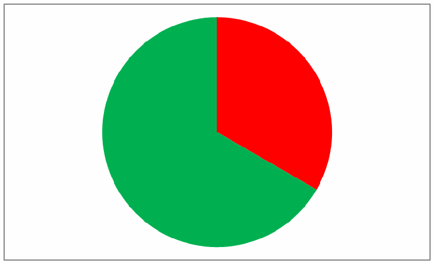
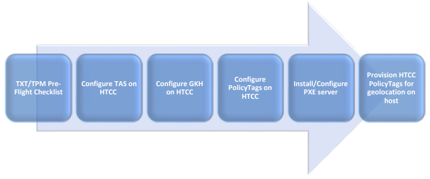

NIST IR 7904 日本語訳
英語タイトル : Trusted Geolocation in the Cloud: Proof of Concept Implementation日本語タイトル : クラウドにおける信頼できる地理的位置：概念実証の実装
公開日 : 2015-12-10
原文URL : https://csrc.nist.gov/pubs/ir/7904/final
翻訳編集 : 自動生成（有志による非公式の日本語訳）, 原文取得日 : 2026-10-31, 訳文 : 617 / 637 ブロック
[要約] NIST IR 7904 は、IaaS（Infrastructure as a Service）クラウドコンピューティング技術と地理的位置にかかわる、選ばれたセキュリティ上の課題を説明する報告書です。続いて、それらの課題に対処するよう設計された概念実証の実装を、組織が望めば再現できる程度の詳細さで記述します。本書は、広範なセキュリティコミュニティが、記述された概念実証の実装を検証し、実装するための設計図またはテンプレートとして使えることを意図しています。この実装は課題を解く一つの方法にすぎず、他の製品や手法の利用を妨げるものではないとされています。
NISTIR 7904
NISTIR 7904
Trusted Geolocation in the Cloud: Proof of Concept Implementation
クラウドにおける信頼できる地理的位置: 概念実証の実装
Michael Bartock
Murugiah Souppaya
Raghuram Yeluri
Uttam Shetty
James Greene
Steve Orrin
Hemma Prafullchandra
John McLeese
Jason Mills
Daniel Carayiannis
Tarik Williams
Karen Scarfone
Michael Bartock
Murugiah Souppaya
Raghuram Yeluri
Uttam Shetty
James Greene
Steve Orrin
Hemma Prafullchandra
John McLeese
Jason Mills
Daniel Carayiannis
Tarik Williams
Karen Scarfone
This publication is available free of charge from:
http://dx.doi.org/10.6028/NIST.IR.7904
この刊行物は次の場所から無料で入手できます:
http://dx.doi.org/10.6028/NIST.IR.7904
［NIST のロゴ。公的な標章のため、この非公式サイトには掲載していません。原本 PDF を参照してください。］
NISTIR 7904
NISTIR 7904
Trusted Geolocation in the Cloud: Proof of Concept Implementation
クラウドにおける信頼できる地理的位置: 概念実証の実装
Michael Bartock
Murugiah Souppaya
Computer Security Division
Information Technology Laboratory
Raghuram Yeluri
Uttam Shetty
James Greene
Steve Orrin
Intel Corporation
Santa Clara, California
Hemma Prafullchandra
John McLeese
Jason Mills
HyTrust
Mountain View, California
Daniel Carayiannis
Tarik Williams
RSA, The Security Division of EMC
Bedford, Massachusetts
Karen Scarfone
Scarfone Cybersecurity
Clifton, Virginia
Michael Bartock
Murugiah Souppaya
コンピュータセキュリティ部門
情報技術研究所
Raghuram Yeluri
Uttam Shetty
James Greene
Steve Orrin
Intel Corporation
Santa Clara, California
Hemma Prafullchandra
John McLeese
Jason Mills
HyTrust
Mountain View, California
Daniel Carayiannis
Tarik Williams
RSA, The Security Division of EMC
Bedford, Massachusetts
Karen Scarfone
Scarfone Cybersecurity
Clifton, Virginia
This publication is available free of charge from:
http://dx.doi.org/10.6028/NIST.IR.7904
この刊行物は次の場所から無料で入手できます:
http://dx.doi.org/10.6028/NIST.IR.7904
December 2015
2015 年 12 月
U.S. Department of Commerce
Penny Pritzker, Secretary
米国商務省
Penny Pritzker 長官
National Institute of Standards and Technology
Willie May, Under Secretary of Commerce for Standards and Technology and Director
米国国立標準技術研究所
Willie May、NIST 所長兼商務次官（標準・技術担当）
National Institute of Standards and Technology Internal Report 7904
59 pages (December 2015)
米国国立標準技術研究所 内部報告書 7904
59 ページ（2015 年 12 月）
This publication is available free of charge from:
http://dx.doi.org/10.6028/NIST.IR.7904
この刊行物は次の場所から無料で入手できます:
http://dx.doi.org/10.6028/NIST.IR.7904
Certain commercial entities, equipment, or materials may be identified in this document in order to describe an experimental procedure or concept adequately. Such identification is not intended to imply recommendation or endorsement by NIST, nor is it intended to imply that the entities, materials, or equipment are necessarily the best available for the purpose.
本書では、実験の手順や概念を適切に説明するために、特定の商業団体、装置、または資料を挙げている場合があります。こうした記載は、NIST による推奨や支持を意味するものではなく、それらの団体、資料、または装置が目的に対して必ずしも最良であることを意味するものでもありません。
There may be references in this publication to other publications currently under development by NIST in accordance with its assigned statutory responsibilities. The information in this publication, including concepts and methodologies, may be used by Federal agencies even before the completion of such companion publications. Thus, until each publication is completed, current requirements, guidelines, and procedures, where they exist, remain operative. For planning and transition purposes, Federal agencies may wish to closely follow the development of these new publications by NIST.
本書には、NIST が法令上の責務に従って現在策定中の他の刊行物への言及が含まれている場合があります。概念や方法論を含む本書の情報は、そうした関連刊行物の完成前であっても、連邦機関が使用してもよいです。したがって、各刊行物が完成するまでは、現行の要件、ガイドライン、および手順が存在する場合には、それらが引き続き有効です。計画および移行のため、連邦機関は、NIST によるこれらの新しい刊行物の策定状況を注意深く追うことを検討してもよいです。
Organizations are encouraged to review all draft publications during public comment periods and provide feedback to NIST. Many NIST cybersecurity publications, other than the ones noted above, are available at http://csrc.nist.gov/publications.
組織は、パブリックコメント期間中にすべてのドラフト刊行物を確認し、NIST にフィードバックを提供することが推奨されます。上記以外の NIST のサイバーセキュリティ関連刊行物の多くは、http://csrc.nist.gov/publications で入手できます。
Comments on this publication may be submitted to:
本書へのコメントは次の宛先に提出できます:
National Institute of Standards and Technology
Attn: Computer Security Division, Information Technology Laboratory
100 Bureau Drive (Mail Stop 8930) Gaithersburg, MD 20899-8930
米国国立標準技術研究所
Attn: Computer Security Division, Information Technology Laboratory
100 Bureau Drive (Mail Stop 8930) Gaithersburg, MD 20899-8930
Reports on Computer Systems Technology
コンピュータシステム技術に関する報告書
The Information Technology Laboratory (ITL) at the National Institute of Standards and Technology (NIST) promotes the U.S. economy and public welfare by providing technical leadership for the Nation’s measurement and standards infrastructure. ITL develops tests, test methods, reference data, proof of concept implementations, and technical analyses to advance the development and productive use of information technology. ITL’s responsibilities include the development of management, administrative, technical, and physical standards and guidelines for the cost-effective security and privacy of other than national security-related information in Federal information systems.
米国国立標準技術研究所（NIST）の情報技術研究所（ITL）は、国の測定・標準インフラに技術面での指導力を発揮することで、米国経済と公共の福祉を促進しています。ITL は、情報技術の発展と生産的な活用を進めるため、試験、試験方法、参照データ、概念実証の実装、技術分析を開発しています。ITL の責務には、連邦情報システムにおける、国家安全保障関連以外の情報の、費用対効果の高いセキュリティとプライバシーのための、管理面、運用面、技術面、物理面の標準およびガイドラインの策定が含まれます。
Abstract
要旨
This publication explains selected security challenges involving Infrastructure as a Service (IaaS) cloud computing technologies and geolocation. It then describes a proof of concept implementation that was designed to address those challenges. The publication provides sufficient details about the proof of concept implementation so that organizations can reproduce it if desired. The publication is intended to be a blueprint or template that can be used by the general security community to validate and implement the described proof of concept implementation.
本書は、Infrastructure as a Service（IaaS）型のクラウドコンピューティング技術と地理的位置に関する、いくつかのセキュリティ上の課題を説明します。そのうえで、それらの課題に対処するために設計された概念実証の実装を説明します。本書は、組織が希望すれば再現できるだけの十分な詳細を、概念実証の実装について提供します。本書は、セキュリティコミュニティ全般が、説明した概念実証の実装を検証し、実装するために使える、設計図またはテンプレートとなることを意図しています。
Keywords
キーワード
cloud computing; geolocation; Infrastructure as a Service (IaaS); roots of trust; virtualization
クラウドコンピューティング; 地理的位置; Infrastructure as a Service（IaaS）; 信頼の起点; 仮想化
Acknowledgments
謝辞
The authors wish to thank their colleagues who reviewed drafts of this document and contributed to its technical content, in particular Kevin Fiftal from Intel Corporation.
著者らは、本書のドラフトをレビューし、その技術的内容に貢献してくれた同僚、とりわけ Intel Corporation の Kevin Fiftal に感謝します。
Audience
想定読者
This document has been created for security researchers, cloud computing practitioners, system integrators, and other parties interested in techniques for solving the security problem in question: improving the security of virtualized infrastructure cloud computing technologies by enforcing geolocation restrictions.
本書は、セキュリティ研究者、クラウドコンピューティングの実務者、システムインテグレーター、および問題となっているセキュリティ上の課題、すなわち地理的位置の制限を強制することで仮想化インフラ型クラウドコンピューティング技術のセキュリティを向上させる課題を解決する技法に関心を持つその他の関係者のために作成されました。
Trademark Information
商標情報
All registered trademarks or trademarks belong to their respective organizations.
登録商標および商標は、すべてそれぞれの組織に帰属します。
Table of Contents
目次
List of Appendices
付録の一覧
List of Figures and Tables
図表の一覧
1 Introduction
1 はじめに
1.1 Purpose and Scope
1.1 目的と範囲
This publication explains selected security challenges involving Infrastructure as a Service (IaaS) cloud computing technologies and geolocation. It then describes a proof of concept implementation that was designed to address those challenges. The publication provides sufficient details about the proof of concept implementation so that organizations can reproduce it if desired. The publication is intended to be a blueprint or template that can be used by the general security community to validate and implement the described proof of concept implementation.
本書は、Infrastructure as a Service（IaaS）型のクラウドコンピューティング技術と地理的位置に関する、いくつかのセキュリティ上の課題を説明します。そのうえで、それらの課題に対処するために設計された概念実証の実装を説明します。本書は、組織が希望すれば再現できるだけの十分な詳細を、概念実証の実装について提供します。本書は、セキュリティコミュニティ全般が、説明した概念実証の実装を検証し、実装するために使える、設計図またはテンプレートとなることを意図しています。
It is important to note that the proof of concept implementation presented in this publication is only one possible way to solve the security challenges. It is not intended to preclude the use of other products, services, techniques, etc. that can also solve the problem adequately, nor is it intended to preclude the use of any cloud products or services not specifically mentioned in this publication.
本書で示す概念実証の実装は、セキュリティ上の課題を解決する方法の 1 つにすぎないことに注意してください。これは、同じ問題を適切に解決できるほかの製品、サービス、技法などの使用を妨げるものではなく、本書で具体的に挙げていないクラウド製品やサービスの使用を妨げるものでもありません。
1.2 Document Structure
1.2 文書の構成
This document is organized into the following sections and appendices:
本書は、次の節と付録で構成されています。
•Section 2 defines the problem (usage scenario) to be solved.
•第 2 節では、解決すべき問題（利用シナリオ）を定義します。
•Sections 3, 4, and 5 describe the three stages of the proof of concept implementation.
•第 3 節、第 4 節、第 5 節では、概念実証の実装の 3 つのステージを説明します。
•Appendix A provides an overview of the high-level hardware architecture of the proof of concept implementation, as well as details on how Intel platforms implement hardware modules and enhanced hardware-based security functions.
•付録 A では、概念実証の実装における高レベルなハードウェアアーキテクチャの概要と、Intel のプラットフォームがハードウェアモジュールおよび強化されたハードウェアベースのセキュリティ機能をどのように実装しているかの詳細を示します。
•Appendix B contains supplementary information provided by HyTrust describing all the required components and steps required to setup the proof of concept implementation.
•付録 B には、HyTrust が提供した補足情報として、概念実証の実装の構築に必要なすべてのコンポーネントと手順を説明する内容を収めています。
•Appendix C contains supplementary information provided by Intel describing all the required components and steps required to setup the proof of concept implementation.
•付録 C には、Intel が提供した補足情報として、概念実証の実装の構築に必要なすべてのコンポーネントと手順を説明する内容を収めています。
•Appendix D presents screen shots from the HyTrust CloudControl product that demonstrate the monitoring of measurements in a governance, risk, and compliance dashboard.
•付録 D では、ガバナンス・リスク・コンプライアンスのダッシュボードで測定値を監視する様子を示す、HyTrust CloudControl 製品のスクリーンショットを示します。
•Appendix E presents screen shots from the RSA Archer product that demonstrate the monitoring of measurements in a governance, risk, and compliance dashboard.
•付録 E では、ガバナンス・リスク・コンプライアンスのダッシュボードで測定値を監視する様子を示す、RSA Archer 製品のスクリーンショットを示します。
•Appendix F lists the major controls from NIST Special Publication 800-53 Revision 4, Security and Privacy Controls for Federal Information Systems and Organizations that affect trusted geolocation.
•付録 F では、信頼できる地理的位置に影響する、NIST Special Publication 800-53 Revision 4, Security and Privacy Controls for Federal Information Systems and Organizations の主要な管理策を挙げます。
•Appendix G maps the major security features from the proof of concept implementation to the corresponding subcategories from the Cybersecurity Framework.
•付録 G では、概念実証の実装の主要なセキュリティ機能を、サイバーセキュリティフレームワークの対応するサブカテゴリに対応付けます。
•Appendix H lists and defines acronyms and other abbreviations used in the document.
•付録 H では、本書で使用する頭字語およびその他の略語を挙げ、定義します。
•Appendix I provides references for the document.
•付録 I では、本書の参考文献を示します。
2 Usage Scenario
2 利用シナリオ
This section defines the problem—the usage scenario—that is to be solved through the proof of concept implementation. Section 2.1 explains the basics of the problem. Section 2.2 defines the problem more formally, outlining all of the intermediate requirements (goals) that must be met in order to achieve the desired solution. These requirements are grouped into three stages of the usage scenario, each of which is examined more closely in Sections 2.2.1 through 2.2.3, respectively.
この節では、概念実証の実装によって解決すべき問題、すなわち利用シナリオを定義します。第 2.1 節では、問題の基本を説明します。第 2.2 節では、問題をより正式に定義し、目指す解決策を実現するために満たさなければならない中間的な要件（目標）をすべて示します。これらの要件は、利用シナリオの 3 つのステージにまとめられており、それぞれを第 2.2.1 節から第 2.2.3 節で詳しく検討します。
2.1 Problem to Address
2.1 対処すべき問題
Shared cloud computing technologies are designed to be highly agile and flexible, transparently using whatever resources are available to process workloads for their customers. However, there are security and privacy concerns with allowing unrestricted workload migration. Whenever multiple workloads are present on a single cloud server, there is a need to segregate those workloads from each other so that they do not interfere with each other, gain access to each other’s sensitive data, or otherwise compromise the security or privacy of the workloads. Imagine two rival companies with workloads on the same server; each company would want to ensure that the server can be trusted to protect their information from the other company. Similarly, a single organization might have multiple workloads that need to be kept separate because of differing security requirements and needs for each workload.
共有型のクラウドコンピューティング技術は、高い俊敏性と柔軟性を備えるように設計されており、利用可能な資源を透過的に使って、顧客のワークロードを処理します。しかし、ワークロードの移行を無制限に認めることには、セキュリティとプライバシー上の懸念があります。1 台のクラウドサーバー上に複数のワークロードが存在する場合は常に、それらが互いに干渉したり、互いの機微なデータにアクセスしたり、あるいはワークロードのセキュリティやプライバシーを損なったりしないように、ワークロードを互いに分離する必要があります。競合する 2 社のワークロードが同じサーバー上にあると想像してみてください。どちらの会社も、そのサーバーが相手の会社から自社の情報を守ることについて信頼できると確認したいと考えるでしょう。同様に、1 つの組織が、ワークロードごとにセキュリティ要件やニーズが異なるために、互いに分離しておく必要がある複数のワークロードを持つ場合もあります。
Another concern with shared cloud computing is that workloads could move from cloud servers located in one country to servers located in another country. Each country has its own laws for data security, privacy, and other aspects of information technology (IT). Because the requirements of these laws may conflict with an organization’s policies or mandates (e.g., laws, regulations), an organization may decide that it needs to restrict which cloud servers it uses based on their location. A common desire is to only use cloud servers physically located within the same country as the organization, or physically located in the same country as the origin of the information. Determining the approximate physical location of an object, such as a cloud computing server, is generally known as geolocation. Geolocation can be accomplished in many ways, with varying degrees of accuracy, but traditional geolocation methods are not secured and they are enforced through management and operational controls that cannot be automated and scaled. Therefore, traditional geolocation methods cannot be trusted to meet cloud security needs.
共有型のクラウドコンピューティングにはもう 1 つの懸念があり、ワークロードがある国にあるクラウドサーバーから別の国にあるサーバーへ移動する可能性があることです。各国には、データのセキュリティ、プライバシー、およびその他の情報技術（IT）の側面について、独自の法律があります。これらの法律の要件が、組織の方針や組織に課される義務（例: 法律、規制）と衝突する場合があるため、組織は、使用するクラウドサーバーをその所在地に基づいて制限する必要があると判断することがあります。よくある要望は、組織と同じ国の内部に物理的に所在するクラウドサーバーのみ、または情報の発生元と同じ国に物理的に所在するクラウドサーバーのみを使うことです。クラウドコンピューティングのサーバーのような物体のおおよその物理的な位置を特定することは、一般に地理的位置の特定（geolocation）と呼ばれます。地理的位置の特定にはさまざまな方法があり、精度もさまざまですが、従来の方法は保護されておらず、自動化や規模拡大ができない管理面および運用面の管理策によって強制されています。そのため、従来の地理的位置の特定方法は、クラウドのセキュリティ上のニーズを満たすものとして信頼することができません。
The motivation behind this usage scenario is to improve the security of cloud computing and accelerate the adoption of cloud computing technologies by establishing an automated hardware root of trust method for enforcing and monitoring geolocation restrictions for cloud servers. A hardware root of trust is an inherently trusted combination of hardware and firmware that maintains the integrity of the geolocation information and the platform. The hardware root of trust is seeded by the organization, with the host’s unique identifier and platform metadata stored in tamper-resistant hardware. This information is accessed by management and security tools using secure protocols to assert the integrity of the platform and confirm the location of the host.
この利用シナリオの動機は、クラウドサーバーの地理的位置の制限を強制し監視するための、自動化されたハードウェアルートオブトラストの方法を確立することで、クラウドコンピューティングのセキュリティを向上させ、クラウドコンピューティング技術の採用を加速させることです。ハードウェアルートオブトラストとは、地理的位置の情報とプラットフォームの完全性を維持する、本質的に信頼されるハードウェアとファームウェアの組み合わせです。ハードウェアルートオブトラストは組織によってシードされ、ホストの一意の識別子とプラットフォームのメタデータが、耐タンパー性のハードウェアに格納されます。この情報には、管理ツールやセキュリティツールが安全なプロトコルを使ってアクセスし、プラットフォームの完全性を表明して、ホストの所在地を確認します。
2.2 Requirements
2.2 要件
Using trusted compute pools (described in Section 3) is a leading approach to aggregate trusted systems and segregate them from untrusted resources, which results in the separation of higher-value, more sensitive workloads from commodity application and data workloads. The principles of operation are to:
信頼されたコンピュートプール（第 3 節で説明）の使用は、信頼されたシステムを集約し、信頼されない資源から分離するための主要な手法です。これにより、価値が高く機微性の高いワークロードを、汎用的なアプリケーションやデータのワークロードから分離できます。動作の原則は次のとおりです。
1.Create a part of the cloud to meet the specific and varying security requirements of users.
1.ユーザーの個別かつ多様なセキュリティ要件を満たすクラウドの一部を作成します。
2.Control access to that portion of the cloud so that the right applications (workloads) get deployed there.
2.適切なアプリケーション（ワークロード）がそこに展開されるように、クラウドのその部分へのアクセスを制御します。
3.Enable audits of that portion of the cloud so that users can verify compliance.
3.ユーザーがコンプライアンスを検証できるように、クラウドのその部分の監査を可能にします。
These trusted compute pools allow IT to gain the benefits of the dynamic cloud environment while still enforcing higher levels of protections for their more critical workloads.
これらの信頼されたコンピュートプールにより、IT 部門は、動的なクラウド環境の利点を得ながら、より重要なワークロードに対してはより高いレベルの保護を強制できます。
The ultimate goal is to be able to use trusted geolocation for deploying and migrating cloud workloads between cloud servers within a cloud. This goal is dependent on smaller prerequisite goals, which can be thought of as requirements that the solution must meet. Because of the number of prerequisites, they have been grouped into three stages:
最終的な目標は、クラウド内のクラウドサーバー間でクラウドワークロードを展開・移行する際に、信頼できる地理的位置を使えるようにすることです。この目標は、より小さな前提となる目標に依存しており、それらはソリューションが満たさなければならない要件と考えることができます。前提となる目標の数が多いため、3 つのステージにまとめています。
•Platform Attestation and Safer Hypervisor Launch. This ensures that the cloud workloads are run on trusted server platforms.
•プラットフォームのアテステーションとより安全なハイパーバイザーの起動。これにより、クラウドワークロードが信頼できるサーバープラットフォーム上で実行されることを確実にします。
1.Trust-Based Homogeneous Secure Migration. This stage allows cloud workloads to be migrated among homogeneous trusted server platforms within a cloud.
1.信頼に基づく同種環境での安全な移行。このステージでは、クラウド内の同種の信頼されたサーバープラットフォーム間で、クラウドワークロードを移行できるようにします。
2.Trust-Based and Geolocation-Based Homogeneous Secure Migration. This stage allows cloud workloads to be migrated among homogeneous trusted server platforms within a cloud, taking into consideration geolocation restrictions.
2.信頼と地理的位置に基づく同種環境での安全な移行。このステージでは、地理的位置の制限を考慮したうえで、クラウド内の同種の信頼されたサーバープラットフォーム間で、クラウドワークロードを移行できるようにします。
The prerequisite goals for each stage, along with more general information on each stage, are explained below.
各ステージの前提となる目標を、各ステージに関するより一般的な情報とともに、以下で説明します。
2.2.1 Stage 0: Platform Attestation and Safer Hypervisor Launch
2.2.1 ステージ 0: プラットフォームのアテステーションと、より安全なハイパーバイザーの起動
A fundamental component of a solution is having some assurance that the platform the workload is running on can be trusted. If the platform is not trustworthy, then not only is it putting the workload at greater risk of compromise, but also there is no assurance that the claimed geolocation of the cloud server is accurate. Having basic assurance of trustworthiness is the initial stage in the solution.
ソリューションの基本的な構成要素は、ワークロードが動作しているプラットフォームが信頼できるという何らかの保証を得ることです。プラットフォームが信頼できなければ、ワークロードが危殆化するリスクが高まるだけでなく、クラウドサーバーが主張する地理的位置が正確であるという保証もなくなります。信頼性についての基本的な保証を得ることが、ソリューションの最初のステージです。
Stage 0 includes the following prerequisite goals:
ステージ 0 には、次の前提となる目標が含まれます。
1.Configure a cloud server platform as being trusted. The “cloud server platform” includes the hardware configuration (e.g., Basic Input/Output System (BIOS ) settings) and the hypervisor configuration. (This assumes that the hypervisor is running directly on the hardware, and not on top of another operating system. This also assumes that the hypervisor has not been compromised and that the hypervisor is the designated version.)
1.クラウドサーバープラットフォームを信頼されたものとして構成します。「クラウドサーバープラットフォーム」には、ハードウェアの構成（例: Basic Input/Output System（BIOS）の設定）とハイパーバイザーの構成が含まれます。（これは、ハイパーバイザーが別のオペレーティングシステムの上ではなく、ハードウェア上で直接動作していることを前提としています。また、ハイパーバイザーが危殆化しておらず、指定されたバージョンのものであることも前提としています。）
2.Before each hypervisor launch, verify (measure) the trustworthiness of the cloud server platform. The items configured in goal 1 (BIOS and hypervisor) need to have their configurations verified before launching the hypervisor to ensure that the assumed level of trust is still in place.
2.ハイパーバイザーを起動するたびに、事前にクラウドサーバープラットフォームの信頼性を検証（測定）します。目標 1 で構成した項目（BIOS とハイパーバイザー）は、想定した信頼のレベルが依然として維持されていることを確実にするため、ハイパーバイザーを起動する前に構成を検証する必要があります。
3.During hypervisor execution, periodically audit the trustworthiness of the cloud server platform. This periodic audit is essentially the same check as that performed as goal 2, except that it is performed frequently while the hypervisor is executing. Ideally this checking would be part of continuous monitoring.
3.ハイパーバイザーの実行中に、クラウドサーバープラットフォームの信頼性を定期的に監査します。この定期監査は、目標 2 で実施する確認と本質的に同じですが、ハイパーバイザーの実行中に頻繁に行う点が異なります。理想的には、この確認は継続的監視の一部として行われます。
Achieving all of these goals will not prevent attacks from succeeding, but will cause unauthorized changes to the hypervisor or BIOS to be detected much more rapidly than they otherwise would have been. So if a hypervisor is tampered with or subverted, the alteration will be detected quickly, almost instantly if continuous monitoring is being performed. This allows an immediate stop to execution, thus limiting damage to the information being processed within the cloud computing server.
これらの目標をすべて達成しても、攻撃が成功するのを防ぐことはできませんが、ハイパーバイザーや BIOS への不正な変更を、そうでない場合よりもはるかに迅速に検知できるようになります。そのため、ハイパーバイザーが改ざんまたは破壊された場合、その変更は迅速に検知されます。継続的監視が行われていれば、ほぼ即座に検知されます。これにより、実行を直ちに停止できるため、クラウドコンピューティングのサーバー内で処理されている情報への損害を抑えられます。
For more information on the technical topics being addressed by these goals, see the following NIST publications:
これらの目標で扱う技術的な話題の詳細については、次の NIST 刊行物を参照してください。
•NIST Special Publication (SP) 800-125, Guide to Security for Full Virtualization Technologies
http://csrc.nist.gov/publications/PubsSPs.html#800-125
•NIST Special Publication (SP) 800-125, Guide to Security for Full Virtualization Technologies
http://csrc.nist.gov/publications/PubsSPs.html#800-125
•NIST SP 800-128, Guide for Security-Focused Configuration Management of Information Systems
http://csrc.nist.gov/publications/PubsSPs.html#800-128
•NIST SP 800-128, Guide for Security-Focused Configuration Management of Information Systems
http://csrc.nist.gov/publications/PubsSPs.html#800-128
•NIST SP 800-137, Information Security Continuous Monitoring for Federal Information Systems and Organizations
http://csrc.nist.gov/publications/PubsSPs.html#800-137
•NIST SP 800-137, Information Security Continuous Monitoring for Federal Information Systems and Organizations
http://csrc.nist.gov/publications/PubsSPs.html#800-137
•NIST SP 800-144, Guidelines on Security and Privacy in Public Cloud Computing
http://csrc.nist.gov/publications/PubsSPs.html#800-144
•NIST SP 800-144, Guidelines on Security and Privacy in Public Cloud Computing
http://csrc.nist.gov/publications/PubsSPs.html#800-144
•NIST SP 800-147B, BIOS Protection Guidelines for Servers
http://csrc.nist.gov/publications/PubsSPs.html#SP-800-147-B
•NIST SP 800-147B, BIOS Protection Guidelines for Servers
http://csrc.nist.gov/publications/PubsSPs.html#SP-800-147-B
•Draft NIST SP 800-155, BIOS Integrity Measurement Guidelines
http://csrc.nist.gov/publications/PubsSPs.html#800-155
•Draft NIST SP 800-155, BIOS Integrity Measurement Guidelines
http://csrc.nist.gov/publications/PubsSPs.html#800-155
2.2.2 Stage 1: Trust-Based Homogeneous Secure Migration
2.2.2 ステージ 1: 信頼に基づく同種環境での安全な移行
Once stage 0 has been successfully completed, the next objective is to be able to migrate workloads among homogeneous, trusted platforms. Workload migration is a key attribute of cloud computing, improving scalability and reliability. The purpose of this stage is to ensure that any server that a workload is moved to will have the same level of security assurance as the server it was initially deployed to.
ステージ 0 が正常に完了したら、次の目的は、同種の信頼されたプラットフォーム間でワークロードを移行できるようにすることです。ワークロードの移行は、クラウドコンピューティングの重要な特性であり、スケーラビリティと信頼性を向上させます。このステージの目的は、ワークロードの移動先となるどのサーバーも、最初に展開されたサーバーと同じレベルのセキュリティの保証を備えていることを確実にすることです。
Stage 1 includes the following prerequisite goals:
ステージ 1 には、次の前提となる目標が含まれます。
1.Deploy workloads only to cloud servers with trusted platforms. This basically means that you perform stage 0, goal 3 (auditing platform trustworthiness during hypervisor execution) and only deploy a workload to the cloud server if the audit demonstrates that the platform is trustworthy.
1.ワークロードは、信頼されたプラットフォームを持つクラウドサーバーにのみ展開します。これは基本的に、ステージ 0 の目標 3（ハイパーバイザーの実行中にプラットフォームの信頼性を監査すること）を実施し、その監査でプラットフォームが信頼できることが示された場合にのみ、ワークロードをクラウドサーバーに展開するということです。
2.Migrate workloads on trusted platforms to homogeneous cloud servers on trusted platforms; prohibit migration of workloads between trusted and untrusted servers. For the purposes of this publication, homogeneous cloud servers are those that have the same hardware architecture (e.g., Central Processing Unit (CPU) type) and the same hypervisor type, and that reside in the same cloud with a single management console. If a workload has been deployed to a trusted platform, the level of assurance can only be sustained if it is migrated only to hosts with comparable trust levels. So this goal is built upon stage 0, goal 3 (auditing platform trustworthiness during hypervisor execution) performed on both the workload’s current server and the server to migrate the workload to. Only if both servers pass their audits can the migration be permitted to occur.
2.信頼されたプラットフォーム上のワークロードを、信頼されたプラットフォーム上の同種のクラウドサーバーに移行します。信頼されたサーバーと信頼されないサーバーの間でのワークロードの移行は禁止します。本書では、同種のクラウドサーバーとは、同じハードウェアアーキテクチャ（例: 中央処理装置（CPU）の種類）と同じハイパーバイザーの種類を持ち、単一の管理コンソールを持つ同じクラウド内にあるサーバーを指します。ワークロードが信頼されたプラットフォームに展開されている場合、保証のレベルを維持できるのは、同等の信頼レベルを持つホストにのみ移行する場合だけです。したがって、この目標は、ワークロードの現在のサーバーと移行先のサーバーの両方で実施する、ステージ 0 の目標 3（ハイパーバイザーの実行中にプラットフォームの信頼性を監査すること）を土台としています。両方のサーバーが監査に合格した場合にのみ、移行の実施を許可できます。
Achieving these goals ensures that the workloads are deployed to trusted platforms, thus reducing the chance of workload compromise.
これらの目標を達成することで、ワークロードが信頼されたプラットフォームに展開されることを確実にし、ワークロードが危殆化する可能性を減らします。
For more information on the technical topics being addressed by these goals, see the following NIST publications:
これらの目標で扱う技術的な話題の詳細については、次の NIST 刊行物を参照してください。
•NIST SP 800-137, Information Security Continuous Monitoring for Federal Information Systems and Organizations
http://csrc.nist.gov/publications/PubsSPs.html#800-137
•NIST SP 800-137, Information Security Continuous Monitoring for Federal Information Systems and Organizations
http://csrc.nist.gov/publications/PubsSPs.html#800-137
•NIST SP 800-144, Guidelines on Security and Privacy in Public Cloud Computing
http://csrc.nist.gov/publications/PubsSPs.html#800-144
•NIST SP 800-144, Guidelines on Security and Privacy in Public Cloud Computing
http://csrc.nist.gov/publications/PubsSPs.html#800-144
•NIST SP 800-147B, BIOS Protection Guidelines for Servers
http://csrc.nist.gov/publications/PubsSPs.html#SP-800-147-B
•NIST SP 800-147B, BIOS Protection Guidelines for Servers
http://csrc.nist.gov/publications/PubsSPs.html#SP-800-147-B
•Draft NIST SP 800-155, BIOS Integrity Measurement Guidelines
http://csrc.nist.gov/publications/PubsSPs.html#800-155
•Draft NIST SP 800-155, BIOS Integrity Measurement Guidelines
http://csrc.nist.gov/publications/PubsSPs.html#800-155
2.2.3 Stage 2: Trust-Based and Geolocation-Based Homogeneous Secure Migration
2.2.3 ステージ 2: 信頼と地理的位置に基づく同種環境での安全な移行
The next stage builds upon stage 1 by adding the ability to continuously monitor and enforce geolocation restrictions.
次のステージは、ステージ 1 を土台として、地理的位置の制限を継続的に監視し、強制する能力を加えるものです。
Stage 2 includes the following prerequisite goals:
ステージ 2 には、次の前提となる目標が含まれます。
1.Have trusted geolocation information for each trusted platform instance. This information would be stored within the cloud server’s cryptographic module (as a cryptographic hash within the hardware cryptographic module), so that it could be verified and audited readily.
1.信頼されたプラットフォームの各インスタンスについて、信頼できる地理的位置の情報を持ちます。この情報は、検証や監査を容易に行えるように、クラウドサーバーの暗号モジュール内に（ハードウェア暗号モジュール内の暗号ハッシュとして）格納されます。
2.Provide configuration management and policy enforcement mechanisms for trusted platforms that include enforcement of geolocation restrictions. This goal builds upon stage 1, goal 2 (migrating workloads on trusted platforms to other trusted platforms); it enhances stage 1, goal 2 by adding a geolocation check to the server to migrate the workload to.
2.地理的位置の制限の強制を含む、信頼されたプラットフォーム向けの構成管理とポリシー強制の仕組みを提供します。この目標はステージ 1 の目標 2（信頼されたプラットフォーム上のワークロードを、ほかの信頼されたプラットフォームに移行すること）を土台としており、ワークロードの移行先のサーバーに対する地理的位置の確認を加えることで、ステージ 1 の目標 2 を強化します。
3.During hypervisor execution, periodically audit the geolocation of the cloud server platform against geolocation policy restrictions. This goal is built upon stage 0, goal 3 (auditing platform trustworthiness during hypervisor execution), but it is specifically auditing the geolocation information against the policies for geolocation to ensure that the server’s geolocation does not violate the policies.
3.ハイパーバイザーの実行中に、クラウドサーバープラットフォームの地理的位置を、地理的位置のポリシー上の制限と照らして定期的に監査します。この目標は、ステージ 0 の目標 3（ハイパーバイザーの実行中にプラットフォームの信頼性を監査すること）を土台としていますが、サーバーの地理的位置がポリシーに違反しないことを確実にするため、地理的位置の情報を地理的位置に関するポリシーと照らして監査する点が特有です。
Achieving these goals ensures that the workloads are not transferred to a server in an unsuitable geographic location. This avoids issues caused by clouds spanning different physical locations (e.g., countries or states with different data security and privacy laws).
これらの目標を達成することで、ワークロードが不適切な地理的位置にあるサーバーへ移されないことを確実にします。これにより、異なる物理的な場所（例: データセキュリティやプライバシーに関する法律が異なる国や州）にまたがるクラウドによって生じる問題を回避できます。
For more information on the technical topics being addressed by these goals, see the following NIST publications:
これらの目標で扱う技術的な話題の詳細については、次の NIST 刊行物を参照してください。
•NIST SP 800-128, Guide for Security-Focused Configuration Management of Information Systems
http://csrc.nist.gov/publications/PubsSPs.html#800-128
•NIST SP 800-128, Guide for Security-Focused Configuration Management of Information Systems
http://csrc.nist.gov/publications/PubsSPs.html#800-128
•NIST SP 800-137, Information Security Continuous Monitoring for Federal Information Systems and Organizations
http://csrc.nist.gov/publications/PubsSPs.html#800-137
•NIST SP 800-137, Information Security Continuous Monitoring for Federal Information Systems and Organizations
http://csrc.nist.gov/publications/PubsSPs.html#800-137
•NIST SP 800-147B, BIOS Protection Guidelines for Servers
http://csrc.nist.gov/publications/PubsSPs.html#SP-800-147-B
•NIST SP 800-147B, BIOS Protection Guidelines for Servers
http://csrc.nist.gov/publications/PubsSPs.html#SP-800-147-B
•Draft NIST SP 800-155, BIOS Integrity Measurement Guidelines
http://csrc.nist.gov/publications/PubsSPs.html#800-155
•Draft NIST SP 800-155, BIOS Integrity Measurement Guidelines
http://csrc.nist.gov/publications/PubsSPs.html#800-155
3 Usage Scenario Instantiation Example: Stage 0
3 利用シナリオの実現例: ステージ 0
This section describes stage 0 of the proof of concept implementation (platform attestation and safer hypervisor launch).
この節では、概念実証の実装のステージ 0（プラットフォームのアテステーションとより安全なハイパーバイザーの起動）を説明します。
3.1 Solution Overview
3.1 ソリューションの概要
This stage of the usage scenario enables the creation of what are called trusted compute pools. Also known as trusted pools, they are physical or logical groupings of computing hardware in a data center that are tagged with specific and varying security policies, and the access and execution of apps and workloads are monitored, controlled, audited, etc. In this phase of the solution, an attested launch of the platform including the hypervisor is deemed as a trusted node, and is added to the trusted pool.
この利用シナリオのステージでは、信頼されたコンピュートプールと呼ばれるものを作成できるようになります。信頼されたプールとも呼ばれるこれらは、データセンター内のコンピューティングハードウェアを物理的または論理的にまとめたもので、個別かつ多様なセキュリティポリシーでタグ付けされ、アプリやワークロードへのアクセスと実行が監視、制御、監査などされます。ソリューションのこの段階では、ハイパーバイザーを含むプラットフォームのアテステーション済みの起動が信頼されたノードとみなされ、信頼されたプールに追加されます。
Figure 1 depicts the concept of trusted pools. The resources tagged green indicate trusted ones. Critical policies can be defined such that security-sensitive cloud services can only be launched on these trusted resources, or migrated to other trusted platforms within these pools.
図 1 は、信頼されたプールの概念を示しています。緑でタグ付けされた資源は、信頼された資源を示します。セキュリティ上機微なクラウドサービスをこれらの信頼された資源上でのみ起動する、またはこれらのプール内のほかの信頼されたプラットフォームにのみ移行するよう、重要なポリシーを定義できます。
![Diagram of the concept of trusted pools. On the left, a group labeled "Cloud Subscriber" holds servers and data stores; a green arrow labeled "Application Workload" leads to a middle group labeled "Cloud Provider", which holds a server marked with a red dot and a server marked with a green dot plus data stores. A second green arrow leads to a group on the right containing "Cloud Operation Systems", "Cloud Portal", "Verified Infrastructure Software", "Cloud Policy Orchestration", "Trusted Hardware" and "Encrypted Data".](assets/ir-7904/p0015-figure-01.png)
信頼済みプールの概念図です。左の「Cloud Subscriber」（クラウド利用者）のグループにはサーバーとデータストアがあり、「Application Workload」（アプリケーションのワークロード）と書かれた緑の矢印が中央の「Cloud Provider」（クラウド事業者）のグループへ伸びています。中央のグループには赤い印のサーバー、緑の印のサーバー、データストアがあります。さらに緑の矢印が右のグループへ伸び、そこには「Cloud Operation Systems」、「Cloud Portal」、「Verified Infrastructure Software」、「Cloud Policy Orchestration」、「Trusted Hardware」、「Encrypted Data」があります。
Figure 1: Concept of Trusted Pools
図 1: 信頼プールの概念
In order to have a trusted launch of the platform, the two key questions that should be answered are:
プラットフォームの信頼された起動を実現するために、答えを出すべき 2 つの重要な問いは次のとおりです。
1.How would the entity needing this information know if a specific platform has the necessary enhanced hardware-based security features enabled and if a specific platform has a defined/compliant operating system (OS)/virtual machine manager (VMM) running on it?
1.この情報を必要とする事業体は、特定のプラットフォームで必要な強化ハードウェアベースのセキュリティ機能が有効になっているか、また、定義済みまたは準拠したオペレーティングシステム（OS）／仮想マシンマネージャー（VMM）がそのプラットフォーム上で実行されているかを、どのようにして知るのでしょうか。
2.Why should the entity requesting this information, which in a cloud environment would be a scheduler/orchestrator trying to schedule a workload on a set of available nodes/servers, believe the response from the platform?
2.この情報を要求する事業体（クラウド環境では、利用可能な一連のノード／サーバー上でワークロードをスケジュールしようとするスケジューラー／オーケストレーターです）は、なぜプラットフォームからの応答を信頼できると考えるのでしょうか。
Attestation provides the definitive answers to these questions. Attestation is the process of providing a digital signature of a set of measurements securely stored in hardware, then having the requestor validate the signature and the set of measurements. Attestation requires roots of trust. The platform has to have a Root of Trust for Measurement (RTM) that is implicitly trusted to provide an accurate measurement, and enhanced hardware-based security features provide the RTM. The platform also has to have a Root of Trust for Reporting (RTR) and a Root of Trust for Storage (RTS), and the same enhanced hardware-based security features provide these.
アテステーションは、これらの問いに対する決定的な答えを提供します。アテステーションとは、ハードウェアに安全に格納された一連の測定値のデジタル署名を提供し、要求元にその署名と一連の測定値を検証させるプロセスです。アテステーションにはルートオブトラストが必要です。プラットフォームには、正確な測定を提供することが暗黙のうちに信頼される Root of Trust for Measurement（RTM）が必要で、ハードウェアベースの強化されたセキュリティ機能が RTM を提供します。プラットフォームには、Root of Trust for Reporting（RTR）と Root of Trust for Storage（RTS）も必要で、同じハードウェアベースの強化されたセキュリティ機能がこれらを提供します。
The entity that challenged the platform for this information now can make a determination about the trust of the launched platform by comparing the provided set of measurements with “known good/golden” measurements. Managing the “known good” for different hypervisors and operating systems, and various BIOS software, and ensuring they are protected from tampering and spoofing is a critical IT operations challenge. This capability can be internal to a service provider, or it could be delivered as a service by a trusted third party for service providers and enterprises to use.
この情報を求めてプラットフォームにチャレンジした事業体は、提供された一連の測定値を「既知の正常な」または「ゴールデン」測定値と比較して、起動されたプラットフォームの信頼性を判断できるようになります。さまざまなハイパーバイザー、オペレーティングシステム、各種 BIOS ソフトウェアについて「既知の正常な」状態を管理し、それらを改ざんやなりすましから確実に保護することは、IT 運用における重大な課題です。この機能はサービス提供者の内部に設けることも、サービス提供者やエンタープライズが利用できるよう、信頼できる第三者がサービスとして提供することもできます。
3.2 Solution Architecture
3.2 ソリューションのアーキテクチャ
Figure 2 provides a layered view of the solution system architecture. The indicated servers in the resource pool include a hardware module for storing sensitive keys and measurements. All the servers are configured by the virtualization management server.
図 2 は、ソリューションのシステムアーキテクチャを階層的に示したものです。リソースプール内の図示されたサーバーには、機微な鍵と測定値を格納するためのハードウェアモジュールが含まれています。すべてのサーバーは、仮想化管理サーバーによって構成されます。

ステージ0の解決策のシステム構成を層で示した図です。「Resource Pool」（リソースプール）の領域に3台のサーバーがあります。2台は「VMM Software」の下に「Hardware」と「Crypto Module」（暗号モジュール）があり、3台目は「VMM Software」の下に「Hardware (no crypto module)」（暗号モジュールなしのハードウェア）があります。3台の VMM Software は線で右側の「VMM Orchestration Software」（VMM のオーケストレーションソフトウェア）につながっています。その下に「Trust Authority」と「Reporting Console」があり、VMM Orchestration Software とつながっています。
Figure 2: Stage 0 Solution System Architecture
図 2: ステージ 0 のソリューションのシステムアーキテクチャ
The initial step in instantiating the architecture requires provisioning the server for enhanced hardware-based security features. This currently requires physical access to the server to access the BIOS, enable a set of configuration options to use the hardware module (including taking ownership of the module), and activate the enhanced hardware-based security features. This process is highly BIOS and OEM dependent. This step is mandatory for a measured launch of the OS/hypervisor.
アーキテクチャを具現化する最初の手順では、ハードウェアベースの強化されたセキュリティ機能のためにサーバーをプロビジョニングする必要があります。現時点では、これには、BIOS にアクセスしてハードウェアモジュールを使うための一連の構成オプションを有効にし（モジュールの所有権の取得を含む）、ハードウェアベースの強化されたセキュリティ機能を有効化するために、サーバーへの物理的なアクセスが必要です。このプロセスは、BIOS と OEM への依存度が高いものです。この手順は、OS／ハイパーバイザーの計測済み起動に必須です。
Assuming that the virtual machine (VM) supports the enhanced hardware-based security features and these features have been enabled and a launch policy configured, the hypervisor undergoes a measured launch, and the BIOS and VMM components are measured (cryptographically) and placed into the server hardware module. These measurement values are accessible through the virtualization management server via the Application Program Interface (API). When the hosts are initially configured with the virtualization management server, the relevant measurement values are cached in the virtualization management database.
仮想マシン（VM）がハードウェアベースの強化されたセキュリティ機能に対応しており、これらの機能が有効になっていて、起動ポリシーが構成されているとすると、ハイパーバイザーは計測済み起動を行い、BIOS と VMM のコンポーネントが（暗号技術により）測定されて、サーバーのハードウェアモジュールに格納されます。これらの測定値は、アプリケーションプログラムインタフェース（API）を介して、仮想化管理サーバーからアクセスできます。ホストを最初に仮想化管理サーバーで構成するときに、関連する測定値が仮想化管理データベースにキャッシュされます。
In addition to the measured launch, this solution architecture also provides provisions to assign a secure geolocation tag (geotag) to each of the servers during the provisioning process. The geotag is provisioned to a non-volatile index in the hardware module via an out-of-band mechanism, and on a hypervisor launch, the contents of the index are inserted/extended into the hardware module. Enhanced hardware-based security features provide the interface and attestation to the geotag information, including the geotag lookup and user-readable/presentable string/description.
このソリューションのアーキテクチャは、計測済み起動に加えて、プロビジョニングの過程で各サーバーに安全な地理的位置タグ（ジオタグ）を割り当てる仕組みも備えています。ジオタグは、帯域外の仕組みによって、ハードウェアモジュール内の不揮発性インデックスにプロビジョニングされ、ハイパーバイザーの起動時に、そのインデックスの内容がハードウェアモジュールに挿入／拡張されます。ハードウェアベースの強化されたセキュリティ機能は、ジオタグの検索や、ユーザーが読める・提示できる文字列／説明を含め、ジオタグ情報へのインタフェースとアテステーションを提供します。
4 Usage Scenario Instantiation Example: Stage 1
4 利用シナリオの実現例: ステージ 1
This section discusses stage 1 of the proof of concept implementation (trust-based homogeneous secure migration), which is based on the stage 0 work and adds components that migrate workloads among homogeneous, trusted platforms.
この節では、概念実証の実装のステージ 1（信頼に基づく同種環境での安全な移行）を説明します。これはステージ 0 の作業を土台として、同種の信頼されたプラットフォーム間でワークロードを移行するコンポーネントを加えたものです。
4.1 Solution Overview
4.1 ソリューションの概要
Figure 3 shows the operation of the stage 1 solution. It assumes that Server A and Server B are two servers within the same cloud.
図 3 は、ステージ 1 のソリューションの動作を示しています。ここでは、サーバー A とサーバー B が同じクラウド内の 2 台のサーバーであると仮定しています。
![Diagram of the stage 1 solution with numbered steps. "Server A" (VM 1 and VM 2, each with apps and an operating system, and "Software Services" with "Management Software") and "Server B" (VM 3 and VM 4, with the same software services) are in the same cloud. A box labeled "Trust Authority" contains "Configuration Management" and "Policy Enforcement". Step 1 marks the boot of Server A; arrows 2 and 3 run between Server A and the Trust Authority; arrow 4 runs from Server A to Server B; arrow 5 runs from Server A to a box labeled "Audit & Report", which is also connected to Server B. A two-way arrow connects the Trust Authority and Server B.](assets/ir-7904/p0018-figure-01.png)
ステージ1の解決策を番号付きの手順で示した図です。同じクラウドの中に「Server A」（VM 1 と VM 2。それぞれアプリとオペレーティングシステムを持ち、「Software Services」に「Management Software」があります）と「Server B」（VM 3 と VM 4。同じソフトウェアサービスを持ちます）があります。「Trust Authority」の箱には「Configuration Management」（構成管理）と「Policy Enforcement」（ポリシーの施行）があります。手順1は Server A の起動を示し、矢印2と3は Server A と Trust Authority の間、矢印4は Server A から Server B へ、矢印5は Server A から「Audit & Report」（監査と報告）の箱へ伸びています。Audit & Report は Server B ともつながり、Trust Authority と Server B は双方向の矢印で結ばれています。
Figure 3: Stage 1 Solution Overview
図 3: ステージ 1 のソリューションの概要
There are five generic steps performed in the operation of the stage 1 solution, as outlined below and reflected by the numbers in Figure 3:
ステージ 1 のソリューションの動作では、以下に示し、図 3 の番号で表す 5 つの一般的な手順が行われます。
1.Server A performs a measured launch, with the enhanced hardware-based security features populating the measurements in the hardware module.
1.サーバー A が計測済み起動を行い、ハードウェアベースの強化されたセキュリティ機能がハードウェアモジュールに測定値を格納します。
2.Server A sends a quote to the Trust Authority. The quote includes signed hashes of the BIOS, Trusted Boot (TBOOT), VM, and geotag values.
2.サーバー A が Trust Authority にクォートを送信します。クォートには、BIOS、Trusted Boot（TBOOT）、VM、ジオタグの値の署名付きハッシュが含まれます。
3.The Trust Authority verifies the signature and hash values and sends an authorization token to Server A.
3.Trust Authority が署名とハッシュ値を検証し、サーバー A に認可トークンを送信します。
4.Server A’s management layer executes a policy-based action (in this case, a VM transfer to Server B).
4.サーバー A の管理層が、ポリシーに基づく動作（この場合は、サーバー B への VM の転送）を実行します。
5.Server A and Server B get audited periodically based on their measurement values.
5.サーバー A とサーバー B は、それぞれの測定値に基づいて定期的に監査されます。
4.2 Solution Architecture
4.2 ソリューションのアーキテクチャ
The stage 1 architecture is identical to the stage 0 architecture (see Figure 2), with additional measurement occurring related to the migration of workloads among trusted hosts.
ステージ 1 のアーキテクチャはステージ 0 のアーキテクチャ（図 2 を参照）と同一であり、信頼されたホスト間でのワークロードの移行に関連する測定が追加で行われます。
5 Usage Scenario Instantiation Example: Stage 2
5 利用シナリオの実現例: ステージ 2
This section discusses stage 2 of the proof of concept implementation (trust-based and geolocation-based homogeneous secure migration), which is based on the stage 1 work and adds components that take into account geolocation restrictions.
この節では、概念実証の実装のステージ 2（信頼と地理的位置に基づく同種環境での安全な移行）を説明します。これはステージ 1 の作業を土台として、地理的位置の制限を考慮するコンポーネントを加えたものです。
5.1 Solution Overview
5.1 ソリューションの概要
Stage 2 adds the monitoring of measurements in a governance, risk, and compliance dashboard. One chart that might appear in such a dashboard could reflect the relative size of the pools of trusted and untrusted cloud servers. This could be displayed by percentage and/or count. Figure 4 shows a notional example.
ステージ 2 では、ガバナンス・リスク・コンプライアンスのダッシュボードでの測定値の監視が加わります。このようなダッシュボードに表示される可能性のあるグラフの 1 つは、信頼されたクラウドサーバーと信頼されないクラウドサーバーのプールの相対的な大きさを示すものです。これは、割合や件数（またはその両方）で表示できます。図 4 は、概念的な例を示しています。

ラベルのない概念的な円グラフです。大きい緑の部分（約3分の2）が信頼済みのクラウドサーバー、小さい赤の部分（約3分の1）が信頼されていないクラウドサーバーを表しています。
Figure 4: Notional Graph of Trusted and Untrusted Pool Sizes
図 4: 信頼されるプールと信頼されないプールの規模の概念グラフ
Table 1 is a drill-down page from the high-level dashboard view shown in Figure 4. It provides more details on all the servers within the cloud. In this example, there are three servers. Information listed for each server includes the server’s IP address, the status of the three measurements (trusted boot validation, geolocation validation, and system validation), and the timestamp for when those measurements were taken.
表 1 は、図 4 に示す高レベルのダッシュボード表示からのドリルダウンページです。クラウド内のすべてのサーバーに関する詳細を示します。この例では、3 台のサーバーがあります。各サーバーについて掲載される情報には、サーバーの IP アドレス、3 つの測定（トラステッドブートの検証、地理的位置の検証、システムの検証）の状態、およびそれらの測定が行われた時刻のタイムスタンプが含まれます。
Table 1: Trusted Boot and Geolocation Compliance View
表 1: トラステッドブートと地理的位置のコンプライアンス表示
| VM Host | Trusted Boot Validation | Geolocation Validation | System Validation | Last Data Pull |
|---|---|---|---|---|
| <Host 1> | Yes/No | Yes/No | Yes/No | <Timestamp> |
| <Host 2> | Yes/No | Yes/No | Yes/No | <Timestamp> |
| <Host 3> | Yes/No | Yes/No | Yes/No | <Timestamp> |
| VM ホスト | トラステッドブートの検証 | 地理的位置の検証 | システムの検証 | 最終データ取得 |
|---|---|---|---|---|
| <Host 1> | Yes/No | Yes/No | Yes/No | <Timestamp> |
| <Host 2> | Yes/No | Yes/No | Yes/No | <Timestamp> |
| <Host 3> | Yes/No | Yes/No | Yes/No | <Timestamp> |
Figure 5 shows a drill-down from Table 1 for an individual server. It includes the raw measurement data for the trusted boot validation and the geolocation validation, alongside the “golden values” that the trusted boot value and geolocation value are expected to have. It also shows when the server was first measured and when it was most recently measured. Measuring each server’s characteristics frequently (such as every five minutes) helps to achieve a continuous monitoring solution for the servers.
図 5 は、表 1 から個々のサーバーへのドリルダウンを示しています。これには、トラステッドブートの検証と地理的位置の検証の生の測定データが、トラステッドブートの値と地理的位置の値が持つと期待される「ゴールデン値」とともに含まれています。また、サーバーが最初に測定された時刻と、最後に測定された時刻も示されています。各サーバーの特性を（5 分ごとなど）頻繁に測定することは、サーバーの継続的監視のソリューションを実現する助けとなります。
| General Information | |||
|---|---|---|---|
| VM Host: | <IP Address or Host Name> | Tracking ID: | <Unique ID> |
| First Published: | <Time Stamp> | Last Data Pull: | <Time Stamp> |
| Golden Trusted Boot Value: | <Provision Time Trusted Boot Value> | Current Trusted Boot Value: | <Current Trusted Boot Value> |
| Golden Geolocation Value: | <Provision Time Geolocation Value> | Current Geolocation Value: | <Current Geolocation Value> |
| 一般情報 | |||
|---|---|---|---|
| VM ホスト: | <IP Address or Host Name> | 追跡 ID: | <Unique ID> |
| 最初の公開: | <Time Stamp> | 最終データ取得: | <Time Stamp> |
| ゴールデントラステッドブート値: | <Provision Time Trusted Boot Value> | 現在のトラステッドブート値: | <Current Trusted Boot Value> |
| ゴールデン地理的位置値: | <Provision Time Geolocation Value> | 現在の地理的位置値: | <Current Geolocation Value> |
| Trust Validation | |||
|---|---|---|---|
| System Validation: | Yes/No | ||
| Trusted Boot Validation: | Yes/No | Geolocation Validation: | Yes/No |
| 信頼の検証 | |||
|---|---|---|---|
| システムの検証: | Yes/No | ||
| トラステッドブートの検証: | Yes/No | 地理的位置の検証: | Yes/No |
Figure 5: Single Server Overview
図 5: 単一サーバーの概要
5.2 Solution Architecture
5.2 ソリューションのアーキテクチャ
The stage 2 architecture is identical to the stage 0 and stage 1 architectures (see Figure 2), with additional reporting and monitoring occurring related to geolocation.
ステージ 2 のアーキテクチャはステージ 0 およびステージ 1 のアーキテクチャ（図 2 を参照）と同一であり、地理的位置に関連するレポートと監視が追加で行われます。
Appendix A—Hardware Architecture and Prerequisites
付録 A—ハードウェアアーキテクチャと前提条件
This appendix provides an overview of the high-level hardware architecture of the proof of concept implementation, as well as details on how Intel platforms implement hardware modules and enhanced hardware-based security functions.
この付録では、概念実証の実装の高レベルなハードウェアアーキテクチャの概要と、Intel のプラットフォームがハードウェアモジュールとハードウェアベースの強化されたセキュリティ機能をどのように実装しているかの詳細を示します。
A.1 High-Level Implementation Architecture
A.1 高レベルの実装アーキテクチャ
Following the recommendations proposed in NIST SP 800-125, the high-level architecture of the proof of concept implementation is composed of three distinct networks to isolate the traffic flowing through the management VMs, storage device, and public VMs. Figure 6 represents the proof of concept implementation architecture, which includes the various hardware and logical networks.
NIST SP 800-125 で提案されている推奨事項に従い、概念実証の実装の高レベルアーキテクチャは、管理用 VM、ストレージデバイス、公開 VM を流れるトラフィックを分離するために、3 つの独立したネットワークで構成されています。図 6 は、各種のハードウェアと論理ネットワークを含む、概念実証の実装アーキテクチャを表しています。

概念実証の実装のネットワーク構成図です。「Audit & Reporting」（監査・報告）、「Trust Authority」、「Cloud Orchestration」（クラウドのオーケストレーション）の3台のサーバー、「Compute Cluster」（計算クラスター）、「Management Client」（管理用のノートPC）が赤い線で「Management Network」（管理ネットワーク）のスイッチにつながっています。Compute Cluster と「Shared Storage」（共有ストレージ）はオレンジの線で「Storage Network」（ストレージネットワーク）のスイッチにつながっています。「Virtual Machines」（仮想マシン）は緑の線で「VM Traffic Network」（VM トラフィック用ネットワーク）のスイッチを経て「Internet」につながっています。
Figure 6: Proof of Concept Implementation
図 6: 概念実証の実装
Management Network
管理ネットワーク
The management workstation is connected to the management network, which includes the four management servers. A dedicated server is used to host the management VMs for the other management servers: the cloud orchestration server, the trust authority server, and the audit and reporting server. The cloud orchestration server manages the remaining three servers, which are part of the cluster hosting the public VMs. The measurement server takes measurements of the trusted cloud cluster and directs them to the cloud orchestration server. The audit and reporting server communicates with the cloud orchestration server to obtain the measurement values to reflect in the dashboard view.
管理ワークステーションは、4 台の管理サーバーを含む管理ネットワークに接続されています。専用のサーバー 1 台が、ほかの管理サーバー（クラウドオーケストレーションサーバー、トラストオーソリティサーバー、監査・レポートサーバー）の管理用 VM をホストするために使われます。クラウドオーケストレーションサーバーは、公開 VM をホストするクラスターに含まれる残りの 3 台のサーバーを管理します。測定サーバーは、信頼されたクラウドクラスターの測定を行い、それをクラウドオーケストレーションサーバーに送ります。監査・レポートサーバーは、ダッシュボード表示に反映する測定値を取得するために、クラウドオーケストレーションサーバーと通信します。
The management network is connected to a dedicated non-routable network. An additional non-routable network is used to support the automated migration of the VMs from different nodes across the trusted cluster.
管理ネットワークは、専用のルーティングされないネットワークに接続されています。信頼されたクラスター内の異なるノード間でVMを自動移行するために、別のルーティングされないネットワークも使われます。
Storage Network
ストレージネットワーク
The storage device provides shared storage where the public VMs are hosted. The three public VM servers are connected to the storage network, which uses a non-routable network.
ストレージデバイスは、公開 VM をホストする共有ストレージを提供します。3 台の公開 VM サーバーは、ルーティングされないネットワークを使うストレージネットワークに接続されています。
Public VM Network
公開 VM ネットワーク
The public VM network is accessible to the workload owners from the Internet. In the demonstration, a single server represents a typical public workload VM controlled by the customers over the Internet. A dedicated network card on each of the trusted cluster server nodes is used to carry the VM’s traffic.
公開 VM ネットワークは、ワークロードの所有者がインターネットから利用できます。デモンストレーションでは、1 台のサーバーが、顧客がインターネット経由で制御する典型的な公開ワークロード VM を表します。信頼されたクラスターの各サーバーノードにある専用のネットワークカードが、VM のトラフィックを運びます。
A.2 Intel Trusted Execution Technology (Intel TXT) & Trusted Platform Module (TPM)
A.2 Intel Trusted Execution Technology（Intel TXT）およびTrusted Platform Module（TPM）
Hardware-based root of trust, when coupled with an enabled operating system, hypervisor and solutions, constitutes the foundation for a more secure computing platform. This secure platform ensures OS and VMM integrity at boot from rootkits or other low-level attacks. It establishes the trustworthiness of the server and host platforms.
ハードウェアベースのルートオブトラストは、有効化されたオペレーティングシステム、ハイパーバイザーおよびソリューションと組み合わせることで、より安全なコンピューティングプラットフォームの基盤となります。この安全なプラットフォームは、起動時にルートキットやその他の低レベルの攻撃からOSとVMMの完全性を確保します。これにより、サーバーとホストプラットフォームの信頼性が確立されます。
There are three roots of trust in a trusted platform:
信頼されたプラットフォームには、3 つのルートオブトラストがあります。
•Root of trust for measurement (RTM)
•測定のためのルートオブトラスト（RTM）
•Root of trust for reporting (RTR)
•報告のためのルートオブトラスト（RTR）
•Root of trust for storage (RTS)
•ストレージのためのルートオブトラスト（RTS）
RTM, RTR, and RTS are the foundational elements of a single platform. These are the system elements that must be trusted because misbehavior in these normally would not be detectable in the higher layers. In an Intel TXT-enabled platform the RTM is the Intel microcode. This is the Core-RTM (CRTM). An RTM is the first component to send integrity-relevant information (measurements) to the RTS. Trust in this component is the basis for trust in all the other measurements. RTS contains the component identities (measurements) and other sensitive information. A trusted platform module (TPM) provides the RTS and RTR capabilities in a trusted computing platform.
RTM、RTR、RTS は、単一のプラットフォームの基盤となる要素です。これらは、不正な動作が上位の層では通常検知できないため、信頼しなければならないシステム要素です。Intel TXT に対応したプラットフォームでは、RTM は Intel のマイクロコードです。これが Core-RTM（CRTM）です。RTM は、完全性に関連する情報（測定値）を RTS に最初に送るコンポーネントです。このコンポーネントへの信頼が、ほかのすべての測定値への信頼の基礎となります。RTS は、コンポーネントの識別情報（測定値）やその他の機微な情報を保持します。Trusted Platform Module（TPM）は、信頼されたコンピューティングプラットフォームにおいて、RTS と RTR の能力を提供します。
Intel Trusted Execution Technology (Intel TXT) is the RTM, and it is a mechanism to enable visibility, trust, and control in the cloud. Intel TXT is a set of enhanced hardware components designed to protect sensitive information from software-based attacks. Intel TXT features include capabilities in the microprocessor, chipset, I/O subsystems, and other platform components. When coupled with an enabled operating system, hypervisor, and enabled applications, these capabilities provide confidentiality and integrity of data in the face of increasingly hostile environments.
Intel Trusted Execution Technology（Intel TXT）はRTMであり、クラウドにおける可視性、信頼、制御を実現する仕組みです。Intel TXTは、機微な情報をソフトウェアベースの攻撃から保護するために設計された、強化されたハードウェアコンポーネントの集まりです。Intel TXTの機能には、マイクロプロセッサ、チップセット、I/Oサブシステムおよびその他のプラットフォームコンポーネントにおける能力が含まれます。有効化されたオペレーティングシステム、ハイパーバイザーおよび有効化されたアプリケーションと組み合わせることで、これらの能力は、ますます敵対的になる環境においてデータの機密性と完全性を提供します。
Intel TXT incorporates a number of secure processing innovations, including:
Intel TXT は、次のような多くの安全な処理の技術革新を取り入れています。
•Protected execution. Lets applications run in isolated environments so that no unauthorized software on the platform can observe or tamper with the operational information. Each of these isolated environments executes with the use of dedicated resources managed by the platform.
•保護された実行。プラットフォーム上の認可されていないソフトウェアが、動作情報を観察したり改ざんしたりできないように、アプリケーションを分離された環境で実行できるようにします。これらの分離された環境はそれぞれ、プラットフォームが管理する専用の資源を使って実行されます。
•Sealed storage. Provides the ability to encrypt and store keys, data, and other sensitive information within the hardware. This can only be decrypted by the same environment that encrypted it.
•封印されたストレージ。鍵、データ、その他の機微な情報を、ハードウェア内で暗号化して保存する能力を提供します。これは、暗号化したものと同じ環境でのみ復号できます。
•Attestation. Enables a system to provide assurance that the protected environment has been correctly invoked and to take a measurement of the software running in the protected space. The information exchanged during this process is known as the attestation identity key credential and is used to establish mutual trust between parties.
•アテステーション。保護された環境が正しく呼び出されたことをシステムが保証し、保護された領域で動作しているソフトウェアを測定できるようにします。このプロセスで交換される情報は、アテステーション識別鍵の資格情報と呼ばれ、当事者間の相互信頼を確立するために使われます。
•Protected launch. Provides the controlled launch and registration of critical system software components in a protected execution environment.
•保護された起動。保護された実行環境における、重要なシステムソフトウェアコンポーネントの制御された起動と登録を提供します。
Intel Xeon processor 5600 series and the more recent Xeon Processor E3, Xeon Processor E7, and forthcoming Xeon Processor E5 series processors support Intel TXT.
Intel Xeon プロセッサー 5600 シリーズと、より新しい Xeon プロセッサー E3、Xeon プロセッサー E7、および登場予定の Xeon プロセッサー E5 シリーズのプロセッサーが、Intel TXT に対応しています。
Figure 7 depicts the different hardware and software components that Intel TXT is comprised of. Intel TXT works through the creation of a measured launch environment (MLE) enabling an accurate comparison of all the critical elements of the launch environment against a known good source. Intel TXT creates a cryptographically unique identifier for each approved launch-enabled component and then provides a hardware-based enforcement mechanism to block the launch of any code that does not match or, alternately, indicate when an expected trusted launch has not happened. This hardware-based solution provides the foundation on which IT administrators can build trusted platform solutions to protect against aggressive software-based attacks and to better control their virtualized or cloud environments.
図 7 は、Intel TXT を構成するさまざまなハードウェアとソフトウェアのコンポーネントを示しています。Intel TXT は、計測済み起動環境（MLE）を作成することで機能し、起動環境のすべての重要な要素を、既知の正常な情報源と正確に比較できるようにします。Intel TXT は、承認された起動対応のコンポーネントごとに、暗号技術的に一意の識別子を作成し、さらに、一致しないコードの起動を阻止する、あるいは、期待される信頼された起動が行われなかった場合にそれを示す、ハードウェアベースの強制の仕組みを提供します。このハードウェアベースのソリューションは、IT 管理者が、攻撃的なソフトウェアベースの攻撃から守り、仮想化環境やクラウド環境をより適切に制御するための、信頼されたプラットフォームのソリューションを構築する基盤となります。
［第三者の画像。第三者の著作物のため、この非公式サイトには掲載していません。原本 PDF を参照してください。］
Figure 7: Intel TXT Components
図 7: Intel TXT のコンポーネント
Figure 8 illustrates two different scenarios. In the first, the measurements match the expected values, so the launch of the BIOS, firmware, and VMM is allowed. In the second, the system has been compromised by a rootkit (malicious hypervisor), which attempts to install itself below the hypervisor to gain access to the platform. In this case, the Intel TXT-enabled, MLE-calculated hash system measurement will differ from the expected value due to the insertion of the rootkit. Therefore, based on the launch policy, Intel TXT could abort the launch of the hypervisor or report an untrusted launch to the virtualization or cloud management infrastructure for subsequent use.
図 8 は、2 つの異なるシナリオを示しています。1 つ目では、測定値が期待値と一致するため、BIOS、ファームウェア、VMM の起動が許可されます。2 つ目では、システムがルートキット（悪意のあるハイパーバイザー）によって危殆化しており、そのルートキットは、プラットフォームへのアクセスを得るために、ハイパーバイザーの下位に自らをインストールしようとします。この場合、Intel TXT に対応し MLE が計算したハッシュによるシステムの測定値は、ルートキットが挿入されたために期待値と異なります。そのため、Intel TXT は、起動ポリシーに基づいて、ハイパーバイザーの起動を中止するか、信頼されない起動を仮想化またはクラウドの管理インフラに報告して、後で利用できるようにします。
［第三者の画像。第三者の著作物のため、この非公式サイトには掲載していません。原本 PDF を参照してください。］
Figure 8: How Intel TXT Protects the Launch Environment
図 8: Intel TXT による起動環境の保護の仕組み
A.3 Attestation
A.3 アテステーション
There are two main considerations for usage scenarios to be instantiated and delivered in a cloud:
クラウドで利用シナリオを実現し、提供するうえでの主な検討事項は 2 つあります。
•How would the entity needing this information know if a specific platform has Intel TXT enabled or if a specific server has a defined or compliant BIOS or OS running on it (i.e., can it be trusted)?
•この情報を必要とする主体は、特定のプラットフォームでIntel TXTが有効になっているか、また特定のサーバーで定義済みまたは準拠したBIOSやOSが稼働しているか（つまり信頼できるか）を、どのようにして知るのでしょうか。
•Why should the entity requesting this information (which, in a cloud environment, could be a resource scheduler or orchestrator trying to schedule a service on a set of available nodes or servers) trust the response from the platform?
•この情報を要求する事業体（クラウド環境では、利用可能な一連のノードやサーバーにサービスをスケジュールしようとするリソーススケジューラーやオーケストレーターである場合があります）は、なぜプラットフォームからの応答を信頼すべきなのか。
An attestation authority provides the definitive answers to these questions. Attestation up-levels the notion of roots of trust by making the information from various roots of trust visible and usable by other entities. Figure 9 illustrates the attestation protocol providing the means for conveying measurements to the challenger. The endpoint attesting device must have a means of measuring the BIOS firmware, low level device drivers, and operating system and virtual machine monitor components, and forwarding those measurements to the attestation authority. The attesting device must do this while protecting the integrity, authenticity, nonrepudiation, and in some cases, confidentiality of those measurements.
アテステーション機関は、これらの問いに対する決定的な答えを提供します。アテステーションは、さまざまなルートオブトラストからの情報をほかの事業体に見えるようにし、利用可能にすることで、ルートオブトラストの概念を一段引き上げます。図9は、測定値をチャレンジャーに伝える手段を提供するアテステーションプロトコルを示しています。アテステーションを行うエンドポイントデバイスは、BIOSファームウェア、低レベルのデバイスドライバー、オペレーティングシステムおよび仮想マシンモニターのコンポーネントを測定し、それらの測定値をアテステーション機関に転送する手段を持たなければなりません。アテステーションを行うデバイスは、これらの測定値の完全性、真正性、否認防止および場合によっては機密性を保護しながら、これを行わなければなりません。
![Diagram of the remote attestation protocol. On the left, an attesting node contains the "Attestation Agent", the "OS" and the "TPM". On the right are the "Challenger" and, below it, the "Verifier". Arrows show the steps: "1. 160 bit Nonce, NC" from the Challenger to the Attestation Agent; "2. TPMQuoteRequest (NC, PCR list)" from the Attestation Agent to the TPM; "3. TPM Quote Response Sig_AIK (PCR, NC)" from the TPM back to the Attestation Agent; "4. { Sig_AIK (PCR, NC), SML, AIKcert }" from the Attestation Agent to the Challenger; and "5. Integrity Verification" from the Challenger to the Verifier. Below the Verifier: "a. Ver (Sig_AIK (PCR, NC), AIK_pub) = true / false" and "b., c. compare (PCR, SML == Golden Measurements)".](assets/ir-7904/p0026-figure-01.png)
リモートアテステーションプロトコルの図です。左側のアテステーションを行うノードに「Attestation Agent」（アテステーションエージェント）、「OS」、「TPM」があり、右側に「Challenger」（チャレンジャー）とその下の「Verifier」（検証者）があります。矢印が次の手順を示しています。「1. 160 bit Nonce, NC」（160ビットのナンス NC）は Challenger から Attestation Agent へ、「2. TPMQuoteRequest (NC, PCR list)」は Attestation Agent から TPM へ、「3. TPM Quote Response Sig_AIK (PCR, NC)」は TPM から Attestation Agent へ、「4. { Sig_AIK (PCR, NC), SML, AIKcert }」は Attestation Agent から Challenger へ、「5. Integrity Verification」（完全性の検証）は Challenger から Verifier へ伸びています。Verifier の下には「a. Ver (Sig_AIK (PCR, NC), AIK_pub) = true / false」と「b., c. compare (PCR, SML == Golden Measurements)」（PCR と SML をゴールデン測定値と比較）とあります。
Figure 9: Remote Attestation Protocol
図 9: リモートアテステーションプロトコル
Here are the steps shown in Figure 9 for the remote attestation protocol:
図 9 に示すリモートアテステーションプロトコルの手順は次のとおりです。
•In step 1, the challenger, at the request of a requester, creates a non-predictable nonce (NC) and sends it to the attestation agent on the attesting node, along with the selected list of Platform Configuration Registers (PCRs).
•手順 1 では、チャレンジャーが、要求者の依頼を受けて、予測できないナンス（NC）を作成し、選択した Platform Configuration Register（PCR）の一覧とともに、アテステーションを行うノード上のアテステーションエージェントに送信します。
•In step 2, the attestation agent sends that request to the TPM as a TPMQuoteRequest with the nonce and the PCR List.
•手順 2 では、アテステーションエージェントが、そのナンスと PCR の一覧を添えた TPMQuoteRequest として、その要求を TPM に送信します。
•In step 3, in response to the TPMQuote request, the TPM loads the attestation identity key from protected storage in the TPM by using the storage root key (SRK), and performs a TPM Quote command, which is used to sign the selected PCRs and the provided nonce (NC) with the private key AIKpriv. Additionally, the attesting agent retrieves the stored measurement log (SML).
•手順 3 では、TPMQuote 要求に応じて、TPM が、ストレージルート鍵（SRK）を使って、TPM 内の保護されたストレージからアテステーション識別鍵を読み込み、TPM Quote コマンドを実行します。このコマンドは、選択された PCR と、提供されたナンス（NC）に、秘密鍵 AIKpriv で署名するために使われます。さらに、アテステーションエージェントは、保存されている測定ログ（SML）を取得します。
•In step 4, the integrity response step, the attesting agent sends the response consisting of the signed quote, signed nonce (NC), and the SML to the challenger. The attesting agent also delivers the Attestation Identity Key (AIK) credential, which consists of the AIKpub that was signed by a privacy Certificate Authority (CA).
•手順 4 の完全性の応答の手順では、アテステーションエージェントが、署名付きクォート、署名付きナンス（NC）、SML から成る応答をチャレンジャーに送信します。アテステーションエージェントは、プライバシー認証局（CA）が署名した AIKpub から成る、アテステーション識別鍵（AIK）のクレデンシャルも渡します。
•In step 5a, the challenger validates if the AIK credential was signed by a trusted privacy CA, thus belonging to a genuine TPM. The challenger also verifies whether AIKpub is still valid by checking the certificate revocation list of the trusted issuing party.
•手順 5a では、チャレンジャーが、AIK のクレデンシャルが信頼されたプライバシー CA によって署名されたものであり、したがって正規の TPM に属するものであるかどうかを検証します。チャレンジャーは、信頼される発行者の証明書失効リストを確認することで、AIKpub がまだ有効であるかどうかも検証します。
•In step 5b, the challenger verifies the signature of the quote and checks the freshness of the quote.
•手順 5b では、チャレンジャーが、クォートの署名を検証し、クォートの鮮度を確認します。
•In step 5c, based on the received SML and the PCR values, the challenger processes the SML, compares the individual module hashes that are extended to the PCRs against the “good known or golden values,” and recomputes the received PCR values. If the individual values match the golden values and if the computed values match the signed aggregate, the remote node is asserted to be in a trusted state.
•手順 5c では、チャレンジャーが、受け取った SML と PCR の値に基づいて SML を処理し、PCR に拡張された個々のモジュールのハッシュを「既知の正常値またはゴールデン値」と比較し、受け取った PCR の値を再計算します。個々の値がゴールデン値と一致し、計算した値が署名付きの集約値と一致する場合、リモートノードは信頼された状態にあると表明されます。
This protocol is highly resistant against replay attacks, tampering, and masquerading.
このプロトコルは、リプレイ攻撃、改ざん、なりすましに対して高い耐性があります。
Appendix B—Platform Implementation: HyTrust
付録 B—プラットフォームの実装: HyTrust
This section contains supplementary information provided by HyTrust describing all the required components and steps required to set up the proof of concept implementation.
この節には、HyTrust が提供した補足情報として、概念実証の実装の構築に必要なすべてのコンポーネントと手順を説明する内容を収めています。
B.1 Solution Architecture
B.1 ソリューションのアーキテクチャ
Figure 10 shows the architecture depicted in Appendix A, but with the specific products used in the HyTrust platform implementation.
図 10 は、付録 A で示したアーキテクチャを、HyTrust プラットフォームの実装で使われた具体的な製品で示したものです。
![Network diagram of the HyTrust proof of concept implementation. On the left, VMs and machines connect to the "Management Network" with these addresses: "AD & DNS" 192.168.20.20, "HyTrust Cloud Control" 192.168.20.40, "vCenter Server" 192.168.20.11, "PXE Boot Server" 192.168.6.1, "Optiplex 980" 192.168.20.9 and "Archer Server" 192.168.20.53. In the middle are four R620 servers: hypervisor1.nccoe.lab (VMware ESXi 5.5; Nic 1 192.168.20.1, Nic 2 192.168.30.1, Nic3 192.168.100.1, Nic 4 192.168.100.2), hypervisor2.nccoe.lab (VMware ESXi 5.5; 192.168.20.2, 192.168.30.2, 192.168.100.3, 192.168.100.4), hypervisor3.nccoe.lab (VMware ESXi 5.5; 192.168.20.3, 192.168.30.3, 192.168.100.5, 192.168.100.6) and mgmt.nccoe.lab (VMware ESXi 5.1; Nic 1 192.168.20.4). Nic 5 of the three hypervisors connects to the "VM Traffic Network". Nic3 and Nic 4 connect to the "Storage Network" and to the "EqualLogic PS4100" storage (Nic 1 192.168.100.50, Nic 2 192.168.100.51).](assets/ir-7904/p0028-figure-01.png)
HyTrust による概念実証の実装のネットワーク構成図です。左側の VM や機器は次のアドレスで「Management Network」（管理ネットワーク）につながっています。「AD & DNS」192.168.20.20、「HyTrust Cloud Control」192.168.20.40、「vCenter Server」192.168.20.11、「PXE Boot Server」192.168.6.1、「Optiplex 980」192.168.20.9、「Archer Server」192.168.20.53。中央には R620 サーバーが4台あります。hypervisor1.nccoe.lab（VMware ESXi 5.5。Nic 1 192.168.20.1、Nic 2 192.168.30.1、Nic 3 192.168.100.1、Nic 4 192.168.100.2）、hypervisor2.nccoe.lab（VMware ESXi 5.5。Nic 1 192.168.20.2、Nic 2 192.168.30.2、Nic 3 192.168.100.3、Nic 4 192.168.100.4）、hypervisor3.nccoe.lab（VMware ESXi 5.5。Nic 1 192.168.20.3、Nic 2 192.168.30.3、Nic 3 192.168.100.5、Nic 4 192.168.100.6）、mgmt.nccoe.lab（VMware ESXi 5.1。Nic 1 192.168.20.4）です。3台のハイパーバイザーの Nic 5 は「VM Traffic Network」（VM トラフィック用ネットワーク）に、Nic 3 と Nic 4 は「Storage Network」（ストレージネットワーク）と「EqualLogic PS4100」のストレージ（Nic 1 192.168.100.50、Nic 2 192.168.100.51）につながっています。
Figure 10: HyTrust Proof of Concept Implementation
図 10: HyTrust の概念実証の実装
B.2 Hardware Description
B.2 ハードウェアの説明
The implemented architecture is composed of three Dell servers running VMware ESXi 5.5 configured as a cluster with a shared resource pool utilizing an iSCSI storage device, a management node that includes five VMs providing different functionalities, and a dedicated management workstation.
実装したアーキテクチャは、iSCSI ストレージデバイスを利用した共有リソースプールを持つクラスターとして構成され VMware ESXi 5.5 を実行する 3 台の Dell サーバー、さまざまな機能を提供する 5 つの VM を含む管理ノード、および専用の管理ワークステーションで構成されています。
Trusted Cloud Cluster:
信頼されたクラウドクラスター:
•3 x Dell PowerEdge R620 (Intel TXT enabled):
•3 x Dell PowerEdge R620（Intel TXT 有効）:
•2 x Intel Xeon Processor E5-2660 @ 2.20 GHz
•2 x Intel Xeon Processor E5-2660 @ 2.20 GHz
•64 GB Memory
•64 GB メモリ
•VMware ESXi 5.5 hosting the following VMs:
•次の VM をホストする VMware ESXi 5.5:
•Windows Server 2008 R2 for test workload VM connected to the VM Traffic Network
•VM トラフィックネットワークに接続されたテスト用ワークロード VM のための Windows Server 2008 R2
Storage:
ストレージ:
•Dell EqualLogic PS4100
•Dell EqualLogic PS4100
Management Node:
管理ノード:
•Dell PowerEdge R620 (Intel TXT enabled):
•Dell PowerEdge R620（Intel TXT 有効）:
•2 x Intel Xeon Processor E5-2660 @ 2.20 GHz
•2 x Intel Xeon Processor E5-2660 @ 2.20 GHz
•64 GB Memory
•64 GB メモリ
•VMware ESXi 5.1 hosting the following VMs:
•次の VM をホストする VMware ESXi 5.1:
•Windows Server 2008 R2 with VMware vCenter Enterprise Plus Server
•VMware vCenter Enterprise Plus Server を搭載した Windows Server 2008 R2
•Windows Server 2008 R2 with Active Directory and DNS enabled
•Active Directory と DNS を有効にした Windows Server 2008 R2
•Ubuntu 12.04 set up as a PXE Boot Server (iPXE, tfptd, nfs)
•PXE ブートサーバー（iPXE、tftpd、nfs）として設定した Ubuntu 12.04
•HyTrust CloudControl
•HyTrust CloudControl
•Windows Server 2008 R2 with RSA Archer
•RSA Archer を搭載した Windows Server 2008 R2
Management Workstation:
管理ワークステーション:
•Dell Optiplex 980
•Dell Optiplex 980
•Windows 7 with VMware vSphere client
•VMware vSphere クライアントを搭載した Windows 7
B.3 BIOS Changes
B.3 BIOS の変更
The following changes are required in the BIOS settings:
BIOS の設定で、次の変更が必要です。
1.Set Intel TXT to “Enabled”.
1.Intel TXT を「Enabled」に設定します。
2.Set Intel Virtualization Technology (Intel VT) to “Enabled”.
2.Intel Virtualization Technology（Intel VT）を「Enabled」に設定します。
3.Set Intel VT for Directed I/O to “Enabled”.
3.Intel VT for Directed I/O を「Enabled」に設定します。
4.Set “Administrator Password” and reboot prior to enabling the TPM.
4.TPM を有効にする前に、「Administrator Password」を設定して再起動します。
5.Change TPM Administrative Control to “Turn On”; TPM state will show as “enabled and activated” after reboot.
5.TPM Administrative Control を「Turn On」に変更します。再起動後、TPM の状態は「enabled and activated」と表示されます。
B.4 HyTrust CloudControl Installation and Configuration with VMware Components
B.4 VMware コンポーネントを使った HyTrust CloudControl のインストールと設定
HTCC 4.1.0 Product Documentation:
HTCC 4.1.0 製品ドキュメント:
http://downloads.hytrust.com/product_documentation/4.1.0/HyTrust_CloudControl_Installation_Guide.pdf
http://downloads.hytrust.com/product_documentation/4.1.0/HyTrust_CloudControl_Administration_Guide.pdf
http://downloads.hytrust.com/product_documentation/4.1.0/HyTrust_CloudControl_Installation_Guide.pdf
http://downloads.hytrust.com/product_documentation/4.1.0/HyTrust_CloudControl_Administration_Guide.pdf
HTCC 4.1.0 Prerequisites:
HTCC 4.1.0 の前提条件:
Technical Requirements for HyTrust CloudControl Appliance (HTCC)
HyTrust CloudControl アプライアンス（HTCC）の技術要件
Table 2: HTCC System Requirements
表 2: HTCC のシステム要件
| Minimum Requirement | HTCC Virtual Machine |
|---|---|
| Disk Space | 30 GB* |
| Memory | 4 GB** |
| Virtual CPU | 4 |
| Network | 1 Network Interface Controller (NIC) minimum |
| 最小要件 | HTCC 仮想マシン |
|---|---|
| ディスク容量 | 30 GB* |
| メモリ | 4 GB** |
| 仮想 CPU | 4 |
| ネットワーク | ネットワークインタフェースコントローラー（NIC）が最低 1 つ |
* Thin provisioning for test environments only
** By default HTCC is deployed with 16 GB of RAM; for small test environments ONLY this can be changed to 4 GB of RAM prior to first power on.
* シンプロビジョニングはテスト環境のみ
** 既定では HTCC は 16 GB の RAM でデプロイされます。小規模なテスト環境に限り、初回の電源投入前にこれを 4 GB の RAM に変更できます。
IP address requirements on the VM Management Network (to be configured on the HTCC):
IP アドレスの要件（VM 管理ネットワーク上）（HTCC で設定）:
•The HTCC itself needs one IP address (Eth 0 Interface)
•HTCC 自体に 1 つの IP アドレスが必要（Eth 0 インタフェース）
•One IP address for the vCenter Server(s) that will be protected by the HTCC
•HTCC によって保護される vCenter Server 用に 1 つの IP アドレス
•One IP address for the vCenter Web Client Server (if applicable) that will be protected by the HTCC
•HTCC によって保護される vCenter Web Client Server（該当する場合）用に 1 つの IP アドレス
•One IP address for each ESX or ESXi host that will be protected by the HTCC. For example, if you have 10 hosts to protect, a total of 12 IP addresses will be required: 1 HTCC + 1 vCenter + 10 hosts. HTCC Management IP and PIPs (Published IP addresses) have to be on the same subnet.
•HTCC によって保護される ESX または ESXi ホストごとに 1 つの IP アドレス。たとえば、保護するホストが 10 台ある場合、合計 12 個の IP アドレスが必要になります。1 つの HTCC、1 つの vCenter、10 台のホストです。HTCC の管理用 IP と PIP（公開 IP アドレス）は、同じサブネット上になければなりません。
Authentication:
認証:
•Root credentials for all ESX or ESXi hosts
•すべての ESX または ESXi ホストの root クレデンシャル
•Administrator-level account for the vCenter Server instance (Service Account is recommended) typically named "htccVCserviceaccount"
•vCenter Server インスタンスの管理者レベルのアカウント（サービスアカウントを推奨）。通常は "htccVCserviceaccount" という名前
•Domain user account to the Active Directory (AD) environment used for testing (a dedicated AD account for HTCC is recommended) typically named "htccADserviceaccount"
•テスト用に使う Active Directory（AD）環境へのドメインユーザーアカウント（HTCC 専用の AD アカウントを推奨）。通常は "htccADserviceaccount" という名前
Active Directory Groups:
Active Directory グループ:
•ASC_SuperAdmins
•ASC_SuperAdmins
•ASC_NetworkAdmins
•ASC_NetworkAdmins
•ASC_DCAdmins
•ASC_DCAdmins
Active Directory Users:*
Active Directory ユーザー:*
•SuperAdminUser
•SuperAdminUser
•NetworkAdminUser
•NetworkAdminUser
•DCAdminUser
•DCAdminUser
* Be sure to add the users to the corresponding groups.
* 必ず、ユーザーを対応するグループに追加してください。
VMware Components:
VMware コンポーネント:
•ESXi = 5.5 Update 1 build 1623387
•ESXi = 5.5 Update 1 build 1623387
•vCenter = 5.5.0 Update 1 build 1623101
•vCenter = 5.5.0 Update 1 build 1623101
B.5 Trust Authority Installation and Configuration
B.5 Trust Authority のインストールと設定
Figure 11 explains the necessary steps in order to provision HTCC PolicyTags for geolocation. Each step has a detailed writeup in this subsection or the following subsection of the appendix.
図 11 は、地理的位置のために HTCC PolicyTags をプロビジョニングするために必要な手順を説明しています。各手順の詳しい説明は、この項または付録の次の項にあります。

右向きの大きな矢印の中に6つの手順を順に並べた図です。「TXT/TPM Pre-Flight Checklist」（TXT/TPM の事前チェックリスト）、「Configure TAS on HTCC」（HTCC での TAS の構成）、「Configure GKH on HTCC」（HTCC での GKH の構成）、「Configure PolicyTags on HTCC」（HTCC での PolicyTags の構成）、「Install/Configure PXE server」（PXE サーバーのインストールと構成）、「Provision HTCC PolicyTags for geolocation on host」（ホストへの地理位置用 HTCC PolicyTags のプロビジョニング）です。
Figure 11: Process for Provisioning HTCC PolicyTags for Geolocation
図 11: 地理的位置のための HTCC PolicyTags のプロビジョニング手順
B.5.1 TXT/TPM Pre-Flight Checklist
B.5.1 TXT/TPM の事前確認チェックリスト
•Verify TXT/TPM are enabled properly in the BIOS of the hosts.
•ホストの BIOS で、TXT/TPM が適切に有効になっていることを確認します。
•Verify hypervisor has taken ownership of the TPM on all hosts from local host command line; enter this command for ESXi, esxcli hardware trustedboot get. (Note: If either the Dynamic Root of Trust Measurement (DRTM) or TPM shows as false, please verify that TXT and TPM are enabled properly.)
•すべてのホストで、ハイパーバイザーが TPM の所有権を取得していることを、ローカルホストのコマンドラインから確認します。ESXi の場合は、次のコマンドを入力します。esxcli hardware trustedboot get。（注: Dynamic Root of Trust Measurement（DRTM）または TPM のいずれかが false と表示される場合は、TXT と TPM が適切に有効になっていることを確認してください。）
•Verify all hostnames are lower case.
•すべてのホスト名が小文字であることを確認します。
•Verify hosts domain is lower case, and add if blank.
•ホストのドメインが小文字であることを確認し、空欄の場合は追加します。
•Verify DNS entries Forward and Reverse lookup zones are correct and with lower case. (Note: If DNS A records were repopulating in Microsoft DNS with UPPERCASE, this has not caused any issues.)
•DNS のエントリ、すなわち正引きと逆引きのゾーンが正しく、小文字であることを確認します。（注: DNS の A レコードが Microsoft DNS で大文字で再設定されていた場合でも、問題は生じていません。）
•Verify time on vCenter, ESXi hosts, and HTCC are in sync and within five minutes of each other.
•vCenter、ESXi ホスト、HTCC の時刻が同期しており、互いの差が 5 分以内であることを確認します。
•Verify VMM and BIOS versions in vCenter and PCR values in the vCenter Managed Object Browser (MOB). To navigate to these values, a series of links must be clicked in the MOB:
•vCenter の VMM と BIOS のバージョン、および vCenter Managed Object Browser（MOB）の PCR の値を確認します。これらの値に移動するには、MOB で一連のリンクをクリックする必要があります。
1.content – content
1.content – content
2.rootFolder – group-<ID>
2.rootFolder – group-<ID>
3.childEntity – datacenter-<ID>
3.childEntity – datacenter-<ID>
4.hostFolder – group-<ID>
4.hostFolder – group-<ID>
5.childEntity – domain-<ID>
5.childEntity – domain-<ID>
6.host – host-<ID>
6.host – host-<ID>
•To view the PCR Values, you can click on "runtime" or the Method, "QueryTpmAttestationReport" and click Invoke Method.
•PCR の値を表示するには、"runtime" をクリックするか、メソッド "QueryTpmAttestationReport" をクリックし、Invoke Method をクリックします。
•If the Host is setup correctly and supports TPM and the vCenter Server has the appropriate PCR values a long page with many details will be launched.
•ホストが正しく設定されていてTPM に対応しており、vCenter Server に適切な PCR の値がある場合は、多くの詳細を含む長いページが表示されます。
•If the Host does not support TPM or the vCenter Server has no PCR data, only a few return types will be returned but no corresponding values.
•ホストが TPM に対応していない場合、または vCenter Server に PCR のデータがない場合は、いくつかの戻り値の型だけが返され、対応する値は返されません。
B.5.2 Configure TAS on HTCC
B.5.2 HTCC での TAS の設定
To configure the Trust Attestation Service (TAS) on HTCC, please refer to the HyTrust CloudControl Administration Guide in the section titled “Configuring the Trust Attestation Service”.
HTCC で Trust Attestation Service（TAS）を設定するには、HyTrust CloudControl Administration Guide の「Configuring the Trust Attestation Service」という節を参照してください。
B.5.3 Configure GKH on HTCC
B.5.3 HTCC での GKH の設定
To configure Good Known Host (GKH) on HTCC, please refer to the HyTrust CloudControl Administration Guide in the section titled “Enabling Good Known Host”. Figure 12 illustrates how the HTCC host dashboard displays GKH with the green lock icon. More details, such as BIOS version and VMM version, are available when the user hovers the mouse over the lock icon.
HTCC で Good Known Host（GKH）を設定するには、HyTrust CloudControl Administration Guide の「Enabling Good Known Host」という節を参照してください。図 12 は、HTCC のホストダッシュボードが GKH を緑色のロックアイコンで表示する様子を示しています。ユーザーがロックアイコンの上にマウスを置くと、BIOS のバージョンや VMM のバージョンなどの詳細を確認できます。
［第三者の画像。第三者の著作物のため、この非公式サイトには掲載していません。原本 PDF を参照してください。］
Figure 12: VMware Host Selected as GHK
図 12: GHK として選択された VMware ホスト
B.6 Trust Authority Registration
B.6 Trust Authority の登録
B.6.1 Configure PolicyTags on HTCC
B.6.1 HTCC での PolicyTags の設定
To configure PolicyTags on HTCC, please refer to the HyTrust CloudControl Administration Guide in the section titled “PolicyTags”.
HTCC で PolicyTags を設定するには、HyTrust CloudControl Administration Guide の「PolicyTags」という節を参照してください。
B.6.2 Install/Configure PXE Server
B.6.2 PXE サーバーのインストールと設定
PXE stands for Pre-boot eXecution Environment. PXE allows you to boot systems without the presence of a traditional operating system. In order to use PXE, first set up a boot-server and configure it for DHCP, TFTP, and NFS services. The following steps describe the boot-server setup process:
PXE は Pre-boot eXecution Environment の略です。PXE を使うと、従来のオペレーティングシステムが存在しなくても、システムを起動できます。PXE を使うには、まずブートサーバーを設定し、DHCP、TFTP、NFS のサービス用に構成します。ブートサーバーの設定プロセスは、次の手順のとおりです。
1.Set up a virtual machine as a boot server.
1.仮想マシンをブートサーバーとして設定します。
2.Set up the base operating system.
2.ベースのオペレーティングシステムを設定します。
3.Set up services.
3.サービスを設定します。
4.Configure GPXE to boot up on iPXE.
4.GPXE を iPXE で起動するように構成します。
Prerequisites:
前提条件:
•VMware ESXi 5.0 or later
•VMware ESXi 5.0 以降
•New virtual machine
•新しい仮想マシン
•vHW8
•vHW8
•Linux: Ubuntu Linux (64 bit) x86_64 or CentOS
•Linux: Ubuntu Linux（64 ビット）x86_64 または CentOS
•1 vCPU
•1 vCPU
•512 MB RAM
•512 MB RAM
•32 GB HD + LSI Logic Serial Attached SCSI (SAS) Host Bus Adapter (HBA)
•32 GB HD + LSI Logic Serial Attached SCSI（SAS）ホストバスアダプター（HBA）
Note: Disk can be as small as 4 GB, if only NFS mounting a remote filesystem.
注: NFS でリモートファイルシステムをマウントするだけの場合、ディスクは 4 GB 程度まで小さくできます。
Network Requirements:
ネットワーク要件:
Connecting the system to the bootstrap network can be accomplished in one of three ways:
システムをブートストラップネットワークに接続するには、次の 3 つの方法のいずれかを使えます。
•Set the physical switch ports on the upstream switch to access mode with manually relocated/ reconnected cabling. This can be used for the environment with a small number of machines.
•上位スイッチの物理スイッチポートをアクセスモードに設定し、ケーブルを手動で付け替える／再接続します。これは、マシンの台数が少ない環境で使えます。
•The upstream switch port that is connected to the physical uplink is configured as a trunk port. The virtual switch itself is inspecting and adding or removing the VLAN tags. The bootstrap services operate on the untagged native VLAN and all other VLANs are delivered tagged.
•物理アップリンクに接続されている上位スイッチのポートを、トランクポートとして構成します。仮想スイッチ自体が VLAN タグを検査し、付加または削除します。ブートストラップサービスはタグなしのネイティブ VLAN で動作し、ほかのすべての VLAN はタグ付きで配信されます。
•VMware reference Virtual Switch Tagging (VST) on how the network is set up in the lab: http://kb.vmware.com/selfservice/microsites/search.do?language=en_US&cmd=displayKC&externalId=1003806#estPoints
•ラボでのネットワークの設定方法に関する VMware reference Virtual Switch Tagging (VST): http://kb.vmware.com/selfservice/microsites/search.do?language=en_US&cmd=displayKC&externalId=1003806#estPoints
•Use a "DHCP-Relay" or "DHCP-Helper" in combination with the Virtual Local Area Network (VLAN) trunk, with the actual bootstrap services operating on some other remote VLAN.
•Virtual Local Area Network（VLAN）トランクと組み合わせて "DHCP-Relay" または "DHCP-Helper" を使い、実際のブートストラップサービスは別のリモート VLAN で動作させる。
The PXE "Services VM" needs to have in-guest 'eth1' (Network Adapter 2 at VM configuration level) connected to a vSwitch or DvSwitch portgroup mapped to the same bootstrap network VLAN as described above. It does not need Promisc or Media Access Control (MAC) Spoof vSwitch permissions in order to function properly.
PXE の "Services VM" は、ゲスト内の 'eth1'（VM 構成レベルでは Network Adapter 2）を、上記のとおり同じブートストラップネットワークの VLAN に対応付けた vSwitch または DvSwitch のポートグループに接続する必要があります。正常に動作させるために、Promisc や Media Access Control（MAC）Spoof の vSwitch 権限は必要ありません。
Set Up Services:
サービスの設定:
You will receive a ‘.tgz’ bundle from HyTrust DevOps, along with pointers on where to obtain the correct version of the Intel Cloud Integrity Technology Asset Tag Provisioning ISO image.
HyTrust DevOps から、Intel Cloud Integrity Technology Asset Tag Provisioning ISO イメージの正しいバージョンの入手先に関する案内とともに、'.tgz' のバンドルを受け取ります。
Copy the bundle and ISO image into the home directory of the maintenance user (via SCP or SFTP), then extract the bundle:
このバンドルと ISO イメージを、（SCP または SFTP で）保守用ユーザーのホームディレクトリにコピーしてから、バンドルを展開します。
1.tar -xzvf./path/to/file.tgz
1.tar -xzvf./path/to/file.tgz
2.Next, launch the configuration script within the extracted files:
2.次に、展開したファイルの中にある設定スクリプトを起動します。
3.SVC_VM_ALL=1./Services_VM/Services_VM_Configuration.sh
3.SVC_VM_ALL=1./Services_VM/Services_VM_Configuration.sh
4.The script will install all requisite services (...) and move configuration files into place as shown in the next section.
4.このスクリプトは、必要なサービスをすべてインストールし（...）、次の節に示すとおりに設定ファイルを所定の位置に移動します。
Configure PXE Server for Local Network Topology:
ローカルネットワークのトポロジーに合わせた PXE サーバーの設定
Within the PXE "Services VM", the configuration files interoperate as follows:
PXE の "Services VM" 内では、設定ファイルは次のように連携します。
•/etc/network/interfaces — eth0 / eth1 network interface configurations.
•/etc/network/interfaces — eth0 / eth1 のネットワークインタフェースの設定。
•/etc/default/isc-dhcp-server — DHCP daemon configuration.
•/etc/default/isc-dhcp-server — DHCP デーモンの設定。
•/etc/dhcp/dhcpd.conf — DHCP daemon configuration. Much of the file is comments.
•/etc/dhcp/dhcpd.conf — DHCP デーモンの設定。ファイルの大部分はコメントです。
•/etc/default/tftpd-hpa — TFTP daemon configuration.
•/etc/default/tftpd-hpa — TFTP デーモンの設定。
•/etc/default/nfs-kernel-server — NFS daemon configuration.
•/etc/default/nfs-kernel-server — NFS デーモンの設定。
•/etc/exports.d/local-intel.exports — NFS daemon filesystem export declaration.
•/etc/exports.d/local-intel.exports — NFS デーモンのファイルシステムのエクスポート宣言。
•/var/lib/tftpboot/pxelinux.cfg/default — First phase (gPXE) bootstrap configuration.
•/var/lib/tftpboot/pxelinux.cfg/default — 第 1 段階（gPXE）のブートストラップ設定。
•/var/lib/tftpboot/Intel/Mt.Wilson_TAS/2.0_GA/ATM/iPXE.cfg — Second phase (iPXE) bootstrap configuration.
•/var/lib/tftpboot/Intel/Mt.Wilson_TAS/2.0_GA/ATM/iPXE.cfg — 第 2 段階（iPXE）のブートストラップ設定。
Configure GPXE to Boot Up on iPXE:
GPXE を iPXE で起動するための設定
Configure the iPXE server for Asset Tag management.
Asset Tag の管理のために、iPXE サーバーを設定します。
You will have to provide variables such as:
次のような変数を指定する必要があります。
atag-server = “http://<HTCC management IP address>: <7443>/mtwilson/v2”
atag-server = “http://<HTCC management IP address>: <7443>/mtwilson/v2”
atag-username = ‘tagadmin’
atag-username = ‘tagadmin’
Provide four additional variables to specify where the casper boot loader will be located:
casper ブートローダーの場所を指定するために、さらに 4 つの変数を指定します。
•nfs-host
•nfs-host
•nfs-root
•nfs-root
•http-host
•http-host
•http-root
•http-root
Provision HTCC PolicyTags for Geolocation on Host:
ホスト上での地理的位置情報用 HTCC PolicyTags のプロビジョニング
To provision HTCC PolicyTags for geolocation on host, please refer to the HyTrust CloudControl Administration Guide in the section titled “Provisioning Hosts”.
ホストで地理的位置のための HTCC PolicyTags をプロビジョニングするには、HyTrust CloudControl Administration Guide の「Provisioning Hosts」という節を参照してください。
Figure 13 depicts the PolicyTags Workflow from the HyTrust CloudControl Administration Guide in the section titled “Provisioning Hosts”.
図 13 は、HyTrust CloudControl Administration Guide の「Provisioning Hosts」という節にある PolicyTags のワークフローを示しています。
［第三者の画像。第三者の著作物のため、この非公式サイトには掲載していません。原本 PDF を参照してください。］
Figure 13: PolicyTags Provisioning Workflow in the HyTrust Environment
図 13: HyTrust 環境における PolicyTags のプロビジョニングのワークフロー
Figure 14 illustrates how to create different values for policy tags inside of the HTCC. These values are what make up the policy tags that get provisioned to individual hosts during the provisioning process.
図 14 は、HTCC 内でポリシータグのさまざまな値を作成する方法を示しています。これらの値が、プロビジョニングの過程で個々のホストにプロビジョニングされるポリシータグを構成します。
［第三者の画像。第三者の著作物のため、この非公式サイトには掲載していません。原本 PDF を参照してください。］
Figure 14: PolicyTags Provisioning Workflow in the HyTrust Environment
図 14: HyTrust 環境における PolicyTags のプロビジョニングのワークフロー
Once policy tags are created, rules in the HTCC must be created so that the desired rules for the policy tags are enforced. Figure 15 shows rule creation that will allow for virtual machine migration between hosts that have a policy tag where the country is USA, State is MD, region is GEOLOC, classification is CLASS1, and trust status is Trusted. This rule will allow virtual machine migration between hosts that are trusted and within the same geolocation.
ポリシータグを作成したら、ポリシータグに対する意図したルールが強制されるように、HTCC でルールを作成する必要があります。図 15 は、国が USA、州が MD、リージョンが GEOLOC、分類が CLASS1、信頼ステータスが Trusted であるポリシータグを持つホスト間での仮想マシンの移行を許可するルールの作成を示しています。このルールにより、信頼されていて、同じ地理的位置にあるホスト間での仮想マシンの移行が許可されます。
［第三者の画像。第三者の著作物のため、この非公式サイトには掲載していません。原本 PDF を参照してください。］
Figure 15: Rule Creation to Enforce Policy Tags in HTCC
図 15: HTCC でポリシータグを強制するためのルール作成
Once the rules have been created and applied in the HTCC, enforcement of these rules will automatically happen when a user logs into the HyTrust protected vCenter Server. Figure 16 shows the error message vCenter will display when a user tries to begin a virtual machine migration that does not meet the policy rules that are in place.
ルールを HTCC で作成して適用すると、ユーザーが HyTrust で保護された vCenter Server にログインしたときに、これらのルールの強制が自動的に行われます。図 16 は、ユーザーが、適用されているポリシールールを満たさない仮想マシンの移行を開始しようとしたときに、vCenter が表示するエラーメッセージを示しています。
［第三者の画像。第三者の著作物のため、この非公式サイトには掲載していません。原本 PDF を参照してください。］
Figure 16: HTCC Policy Enforcement within vCenter
図 16: vCenter 内での HTCC によるポリシーの強制
Appendix C—Platform Implementation: OpenStack
付録 C—プラットフォームの実装: OpenStack
This section contains supplementary information provided by Intel describing all the required components and steps required to setup the proof of concept implementation.
この節には、概念実証の実装をセットアップするために必要なすべてのコンポーネントと手順を説明する、Intel が提供した補足情報が含まれています。
Figure 17 details how geo and asset tagging can be incorporated and taken advantage of in OpenStack clouds to provide location and boundary control of workloads/OpenStack images. With geotags/asset tags, you can enforce policies to control placement, migration, or bursting of workloads to trusted systems in specific geographical locations or boundaries, and provide visibility and compliance of your workload policies to ensure tenants of compliance to trust and location policies.
図 17 は、ワークロードや OpenStack イメージの位置と境界を制御するために、OpenStack クラウドで地理タグ付けやアセットタグ付けをどのように組み込み、活用できるかを詳しく示しています。ジオタグやアセットタグを使うと、特定の地理的な場所や境界内にある信頼されたシステムへのワークロードの配置、移行、バーストを制御するポリシーを強制し、テナントが信頼と位置に関するポリシーに準拠していることを確認できるよう、ワークロードポリシーの可視性と準拠状況を提供できます。
![Diagram of geotagging within OpenStack, with five numbered callouts around an "OpenStack" cloud connected by arrows to servers (some marked with national flags) and to a reporting screen. 1: "Provision specific attributes to TPM NVRAM identifying Controls about the platform and its uses: Location information; Customer type information; Workload type information". 2: "The platform TPM records the results of Host Launch (using Intel TXT) measurements and process to verify trustworthiness." 3: "Set Policies on VMs/Workloads. Ex: Trust, Location, Encryption." 4: "Remote Attestation of Platform Trust and Location Attributes; Evaluate policies before OpenStack Scheduler can deploy or migrate VMs on to the Hosts." 5: "Compliance Reporting". One arrow toward a server is blocked by a prohibition sign.](assets/ir-7904/p0038-figure-01.png)
OpenStack 内の地理タグ付けの図。中央の「OpenStack」クラウドが矢印でサーバー（一部に国旗の印）とレポート画面につながっており、周囲に番号付きの説明が5つあります。1:「プラットフォームとその用途に関する制御情報を識別する特定の属性を TPM NVRAM にプロビジョニングする: 位置情報、顧客の種類の情報、ワークロードの種類の情報」。2:「プラットフォーム TPM が、ホスト起動時（Intel TXT を使用）の測定結果と、信頼性を検証するためのプロセスを記録する」。3:「VM／ワークロードにポリシーを設定する。例: 信頼、位置、暗号化」。4:「プラットフォームの信頼および位置属性をリモートアテステーションする。OpenStack スケジューラーがホストに VM をデプロイまたは移行する前に、ポリシーを評価する」。5:「コンプライアンス報告」。サーバーに向かう矢印の1本は、進入禁止の標識で遮られています。
Figure 17: Geotagging within OpenStack
図 17: OpenStack 内でのジオタギング
Asset tags/geotags are made up of one or more user defined attributes, along with a way to make sure the tag is specifically assigned to an asset. Figure 18 depicts how an asset tag/geotag is composed.
アセットタグ／ジオタグは、1 つ以上のユーザー定義の属性と、そのタグが特定の資産に確実に割り当てられるようにする方法から成ります。図 18 は、アセットタグ／ジオタグの構成を示しています。
![Figure explaining the composition of an asset tag/geotag. Text on the left: "Asset = any computing device, Tag = 1 or more Attributes associated to the asset. Ex: Identity, location, price, customer, classification, ....) Asset certificate – A digitally signed set of tags associated with an asset. Asset Tag – SHA-1 hash of the asset certificate". On the right, a diagram titled "What is Geo/Asset Tag?": one or more "Tag" items and the "UUID of Host" are combined with a "Digital Signature" into an "Asset Certificate"; the SHA-1 hash of the Asset Certificate gives the "Asset Tag", which is written to the "TPM NVRAM Index".](assets/ir-7904/p0038-figure-02.png)
資産タグ・地理タグの構成を説明する図です。左の文章は「Asset = any computing device, Tag = 1 or more Attributes associated to the asset. Ex: Identity, location, price, customer, classification, ....) Asset certificate – A digitally signed set of tags associated with an asset. Asset Tag – SHA-1 hash of the asset certificate」（資産はあらゆる計算機器、タグは資産に結び付いた1つ以上の属性〔例: 識別情報、位置、価格、顧客、分類など〕、資産証明書は資産に結び付いたタグの集合にデジタル署名したもの、資産タグは資産証明書の SHA-1 ハッシュ）です。右の「What is Geo/Asset Tag?」の図では、1つ以上の「Tag」と「UUID of Host」（ホストの UUID）が「Digital Signature」（デジタル署名）とともに「Asset Certificate」（資産証明書）になり、その SHA-1 ハッシュが「Asset Tag」（資産タグ）となって「TPM NVRAM Index」に書き込まれます。
Figure 18: Composition of an Asset Tag/Geotag
図 18: アセットタグ／ジオタグの構成
In order for asset tags/geotags to be utilized in the OpenStack environment, there must be modifications made to the out-of-the-box OpenStack implementation. Figure 19 depicts what these changes are, and where in the OpenStack architecture they exist.
OpenStack 環境でアセットタグ／ジオタグを使うためには、標準のままの OpenStack の実装に変更を加えなければなりません。図 19 は、これらの変更の内容と、OpenStack のアーキテクチャのどこにあるかを示しています。
![Architecture diagram of the proposed OpenStack changes. The legend marks "OpenStack Extensions" in yellow and "Intel/ISV provided components" in blue. Standard OpenStack components (gray) include Horizon (dashboard), nova-api (Public API server), User authorisation (SQL, LDAP or fake LDAP using ReDIS), AMQP Messaging (RabbitMQ), nova-network, nova-compute, nova-volume, nova-objectstore, nova-scheduler and Glance (Image Store + Registry), with the Internet, Admin network, Public network, End Users (accessing guest vm), Guest VMs (workloads) and Disk Image (for Guest VMs). The yellow extensions are "Geo-tag Selection UI" and "Trust and location visibility" on Horizon, "VM Policies as Image Properties" on Glance, and "New: LocationFilter" on nova-scheduler. The blue components are "Tag management", "Tag Provisioning", "Trust Attestation Service" and the "Trust & Prov Agent" in the OS/VMM of a server with "TXT+TPM". Arrows connect Tag management and Tag Provisioning to the server and to the Trust Attestation Service, and the LocationFilter to the Trust Attestation Service.](assets/ir-7904/p0039-figure-01.png)
OpenStack に加える変更を示す構成図です。凡例では黄色が「OpenStack Extensions」（OpenStack の拡張）、青が「Intel/ISV provided components」（Intel・ISV が提供する部品）です。灰色の標準の OpenStack の部品には、Horizon（ダッシュボード）、nova-api（公開 API サーバー）、User authorisation（SQL、LDAP、または ReDIS を使った疑似 LDAP によるユーザー認可）、AMQP Messaging（RabbitMQ）、nova-network、nova-compute、nova-volume、nova-objectstore、nova-scheduler、Glance（イメージの保存と登録）があり、Internet、Admin network、Public network、End Users（ゲスト VM を使う利用者）、Guest VMs（ワークロード）、Disk Image（ゲスト VM 用）も描かれています。黄色の拡張は、Horizon の「Geo-tag Selection UI」（地理タグの選択画面）と「Trust and location visibility」（信頼と位置の可視化）、Glance の「VM Policies as Image Properties」（イメージ属性としての VM ポリシー）、nova-scheduler の「New: LocationFilter」です。青の部品は「Tag management」（タグ管理）、「Tag Provisioning」（タグのプロビジョニング）、「Trust Attestation Service」（信頼のアテステーションサービス）、「TXT+TPM」を持つサーバーの OS/VMM にある「Trust & Prov Agent」です。Tag management と Tag Provisioning は矢印でサーバーと Trust Attestation Service につながり、LocationFilter は Trust Attestation Service につながっています。
Figure 19: Proposed OpenStack Changes
図 19: 提案する OpenStack の変更
C.1 Solution Architecture
C.1 ソリューションのアーキテクチャ
Figure 20 shows the architecture depicted in Appendix A, but with the specific products used in the OpenStack platform implementation.
図 20 は、付録 A で示したアーキテクチャを、OpenStack プラットフォームの実装で使われた具体的な製品で示したものです。
![Network diagram of the OpenStack proof of concept implementation. "Intel Cloud Integrity Technology" (192.168.20.11) and "OpenStack Controller" (192.168.20.10) connect to the "Management Network". Four servers are shown: DL385 G6 compute1.lab (Ubuntu LTS 12.04; Nic 1 192.168.20.1, Nic 2 192.168.30.1), R410 compute2.lab (Ubuntu LTS 12.04; 192.168.20.2, 192.168.30.2), R620 compute3.lab (Ubuntu LTS 12.04; 192.168.20.3, 192.168.30.3) and DL380 G7 mgmt.lab (Windows Server 2008 R2; Nic 1 192.168.20.4). Nic 3 of the three compute servers connects to the "VM Traffic Network".](assets/ir-7904/p0040-figure-01.png)
OpenStack による概念実証の実装のネットワーク構成図です。「Intel Cloud Integrity Technology」（192.168.20.11）と「OpenStack Controller」（192.168.20.10）が「Management Network」（管理ネットワーク）につながっています。サーバーは4台で、DL385 G6 compute1.lab（Ubuntu LTS 12.04。Nic 1 192.168.20.1、Nic 2 192.168.30.1）、R410 compute2.lab（Ubuntu LTS 12.04。192.168.20.2、192.168.30.2）、R620 compute3.lab（Ubuntu LTS 12.04。192.168.20.3、192.168.30.3）、DL380 G7 mgmt.lab（Windows Server 2008 R2。Nic 1 192.168.20.4）です。3台の計算サーバーの Nic 3 は「VM Traffic Network」（VM トラフィック用ネットワーク）につながっています。
Figure 20: Proof of Concept Implementation
図 20: 概念実証の実装
C.2 Hardware Description
C.2 ハードウェアの説明
The implemented architecture is composed of three Dell servers running Ubuntu 12.04 LTS with kernel-based virtual machine (KVM) configured as a cluster with a shared resource pool and a management node that includes two VMs providing different functionalities, and a dedicated management workstation.
実装したアーキテクチャは、共有リソースプールを持つクラスターとして構成され、カーネルベースの仮想マシン（KVM）を備えた Ubuntu 12.04 LTS を実行する 3 台の Dell サーバー、さまざまな機能を提供する 2 つの VM を含む管理ノード、および専用の管理ワークステーションで構成されています。
Trusted Cloud Cluster:
信頼されたクラウドクラスター:
•1 x Dell PowerEdge R620 (Intel TXT enabled):
•1 x Dell PowerEdge R620（Intel TXT 有効）:
•2 x Intel Xeon Processor E5-2660 @ 2.20 GHz
•2 x Intel Xeon Processor E5-2660 @ 2.20 GHz
•64 GB memory
•64 GB メモリ
•Ubuntu 12.04 LTS
•Ubuntu 12.04 LTS
•1 x Dell PowerEdge R410 (Intel TXT enabled):
•1 x Dell PowerEdge R410（Intel TXT 有効）:
•2 x Intel Xeon Processor E5630 @ 2.53 GHz
•2 x Intel Xeon Processor E5630 @ 2.53 GHz
•8 GB
•8 GB
•Ubuntu 12.04 LTS
•Ubuntu 12.04 LTS
•1 x HP Proliant DL385 G6
•1 x HP Proliant DL385 G6
•Ubuntu 12.04 LTS
•Ubuntu 12.04 LTS
Management Node:
管理ノード:
•HP Proliant DL380 G7
•HP Proliant DL380 G7
•2 x Intel Xeon Processor E5640 @ 2.67 GHz
•2 x Intel Xeon Processor E5640 @ 2.67 GHz
•12 GB Memory
•12 GB メモリ
•Windows Server 2008 R2 Hyper-V hosting the following VMs:
•次の VM をホストする Windows Server 2008 R2 Hyper-V:
•Ubuntu 12.04 LTS with OpenStack IceHouse Controller
•OpenStack IceHouse Controller を搭載した Ubuntu 12.04 LTS
•Ubuntu 12.04 LTS with Intel Cloud Integrity Technology appliance
•Intel Cloud Integrity Technology アプライアンスを搭載した Ubuntu 12.04 LTS
C.3 BIOS Changes
C.3 BIOS の変更
The following changes are required in the BIOS settings:
BIOS の設定で、次の変更が必要です。
1.Set Intel TXT to “Enabled”.
1.Intel TXT を「Enabled」に設定します。
2.Set Intel Virtualization Technology (Intel VT) to “Enabled”.
2.Intel Virtualization Technology（Intel VT）を「Enabled」に設定します。
3.Set Intel VT for Directed I/O to “Enabled”.
3.Intel VT for Directed I/O を「Enabled」に設定します。
4.Set “Administrator Password” and reboot prior to enabling the TPM.
4.TPM を有効にする前に、「Administrator Password」を設定して再起動します。
5.Change TPM Administrative Control to “Turn On”; TPM state will show as “enabled and activated” after reboot.
5.TPM Administrative Control を「Turn On」に変更します。再起動後、TPM の状態は「enabled and activated」と表示されます。
C.4 OpenStack Components
C.4 OpenStack のコンポーネント
This implementation is running a base install of OpenStack Icehouse, with installation steps followed from the OpenStack official documentation (found at http://docs.openstack.org/icehouse/install-guide/install/apt/content/). The base install includes a single controller node running the identity service (Keystone), the image service (Glance), the networking service, the compute service (Nova), and the dashboard (Horizon), with each additional compute node running the compute service (Nova). Each OpenStack node is running on Ubuntu 12.04 LTS with all of the compute nodes running on its own physical machine while the controller is running within a VM.
この実装では、OpenStack Icehouse の基本インストールを実行しており、インストール手順は OpenStack の公式ドキュメント（http://docs.openstack.org/icehouse/install-guide/install/apt/content/ にあります）に従っています。基本インストールには、アイデンティティサービス（Keystone）、イメージサービス（Glance）、ネットワークサービス、コンピュートサービス（Nova）、ダッシュボード（Horizon）を実行する単一のコントローラーノードが含まれ、追加のコンピュートノードはそれぞれコンピュートサービス（Nova）を実行します。各 OpenStack ノードは Ubuntu 12.04 LTS 上で動作し、すべてのコンピュートノードは各自の物理マシン上で、コントローラーは VM 内で動作します。
C.5 Trust Authority Installation, Configuration, and Registration
C.5 Trust Authority のインストール、設定、登録
The Trust Authority comes as an Intel virtual appliance, Intel Cloud Integrity Technology, which is an easily deployable VM with an install script and answer file for installation of the required services. The Intel Cloud Integrity Technology virtual appliance is available on the Intel FTP site. Instructions for completing the answer file and running the Intel Cloud Integrity Technology installer can be also found in Intel’s FTP site as the Intel Cloud Integrity Technology Product Guide. As part of the Intel Cloud Integrity Technology package, there is also a trust agent that must be installed on each compute node that is TXT and TPM enabled. This trust agent will allow the compute node to register and attest to the Intel Cloud Integrity Technology server, as well as act as the mechanism for Intel Cloud Integrity Technology to push the geotags to each compute node. The Intel trust agent is installed via an install script and answer file, both of which are found on the Intel FTP site along with documentation on how to populate the answer file and run the install script.
Trust Authority は、Intel の仮想アプライアンスである Intel Cloud Integrity Technology として提供されます。これは、必要なサービスをインストールするためのインストールスクリプトと応答ファイルを備えた、容易にデプロイできる VM です。Intel Cloud Integrity Technology の仮想アプライアンスは、Intel の FTP サイトで入手できます。応答ファイルの記入方法と Intel Cloud Integrity Technology インストーラーの実行手順は、Intel Cloud Integrity Technology Product Guide として、同じく Intel の FTP サイトにあります。Intel Cloud Integrity Technology のパッケージには、TXT と TPM が有効な各コンピュートノードにインストールしなければならないトラストエージェントも含まれています。このトラストエージェントにより、コンピュートノードは Intel Cloud Integrity Technology サーバーに登録してアテステーションを行えるようになるほか、Intel Cloud Integrity Technology が各コンピュートノードにジオタグをプッシュするための仕組みとしても機能します。Intel のトラストエージェントは、インストールスクリプトと応答ファイルを使ってインストールします。どちらも Intel の FTP サイトにあり、応答ファイルの記入方法とインストールスクリプトの実行方法を説明するドキュメントも併せて提供されています。
Once the Intel Cloud Integrity Technology server is installed, along with the trust agents on the compute nodes, each compute node can be registered into the Intel Cloud Integrity Technology. This is done by through the “Host Management” tab in the Intel Cloud Integrity Technology URL. Each host is imported by its IP address or hostname; once they are imported into the Intel Cloud Integrity Technology appliance, the trust status of each will be visible in the Intel Cloud Integrity Technology Trust Dashboard, as shown in Figure 21.
Intel Cloud Integrity Technology サーバーと、コンピュートノード上のトラストエージェントをインストールしたら、各コンピュートノードを Intel Cloud Integrity Technology に登録できます。これは、Intel Cloud Integrity Technology の URL にある「Host Management」タブから行います。各ホストは IP アドレスまたはホスト名でインポートされます。Intel Cloud Integrity Technology アプライアンスにインポートされると、それぞれの信頼ステータスが、図 21 に示すように、Intel Cloud Integrity Technology の信頼ダッシュボードに表示されるようになります。
［第三者の画像。第三者の著作物のため、この非公式サイトには掲載していません。原本 PDF を参照してください。］
Figure 21: Intel Cloud Integrity Technology Trust Dashboard
図 21: Intel Cloud Integrity Technology の信頼ダッシュボード
Through the “Asset Tag Management” tab in the Intel Cloud Integrity Technology URL, geotags can be created to be pushed to each node that is registered with Intel Cloud Integrity Technology. Figure 22 shows what the Asset Tag Management page looks like, as well as its functionality on how to create new tag values.
Intel Cloud Integrity Technology の URL にある「Asset Tag Management」タブから、Intel Cloud Integrity Technology に登録された各ノードにプッシュするジオタグを作成できます。図 22 は、Asset Tag Management ページの外観と、新しいタグ値を作成する機能を示しています。
［第三者の画像。第三者の著作物のため、この非公式サイトには掲載していません。原本 PDF を参照してください。］
Figure 22: Intel Cloud Integrity Technology Tag Management
図 22: Intel Cloud Integrity Technology のタグ管理
Once geotags are created for the compute nodes, through the “Asset Tag Management” → “Manage Certificates” tab, geotags can be pushed to each compute node. Figure 23 depicts which certificates have been provisioned to hosts, and also the mechanisms to deploy new certificates or revoke current certificates.
コンピュートノード用のジオタグを作成したら、「Asset Tag Management」→「Manage Certificates」タブから、各コンピュートノードにジオタグをプッシュできます。図 23 は、どの証明書がホストにプロビジョニングされているかと、新しい証明書をデプロイしたり、現在の証明書を失効させたりするための仕組みを示しています。
［第三者の画像。第三者の著作物のため、この非公式サイトには掲載していません。原本 PDF を参照してください。］
Figure 23: Intel Cloud Integrity Technology Certificate Management
図 23: Intel Cloud Integrity Technology の証明書管理
Once geotags have been pushed to the compute nodes, OpenStack services can be modified to ensure that VM migration is enforced by policies that correspond to compute node trust and geotags.
ジオタグをコンピュートノードにプッシュしたら、コンピュートノードの信頼とジオタグに対応するポリシーによって VM の移行が強制されるように、OpenStack のサービスを変更できます。
C.6 Trust Authority and OpenStack Integration
C.6 Trust Authority と OpenStack の統合
Before OpenStack can use the trust attestation that Intel Cloud Integrity Technology provides, it first must know how to communicate with the server, as well as understand how to use the trust assertions that Intel Cloud Integrity Technology provides. Since VM migration policies will be enforced based off the image that instances are launched from, the properties associated with the OpenStack images must be modified. Also, since instance creation is performed through the OpenStack Horizon dashboard, the dashboard code must be modified to reflect the trust policies that can now be associated with images and instances. Finally, to enforce policy-based VM migration, the Nova scheduler must be modified so that it can get the correct trust assertions from Intel Cloud Integrity Technology. Intel provides an OpenStack/Intel Cloud Integrity Technology integration package that automates the above OpenStack modifications. Once the package has been downloaded from the Intel FTP site, the following steps need to be taken:
OpenStack が Intel Cloud Integrity Technology の提供する信頼のアテステーションを利用するには、まず、サーバーとの通信方法を OpenStack が把握し、Intel Cloud Integrity Technology が提供する信頼のアサーションの使い方を理解している必要があります。VM の移行ポリシーは、インスタンスの起動元のイメージに基づいて強制されるため、OpenStack のイメージに関連付けられたプロパティを変更しなければなりません。また、インスタンスの作成は OpenStack の Horizon ダッシュボードを通じて行われるため、イメージやインスタンスに関連付けられるようになった信頼ポリシーを反映するように、ダッシュボードのコードを変更しなければなりません。最後に、ポリシーに基づく VM の移行を強制するには、Nova スケジューラーが Intel Cloud Integrity Technology から正しい信頼のアサーションを取得できるように、変更しなければなりません。Intel は、上記の OpenStack の変更を自動化する、OpenStack／Intel Cloud Integrity Technology の統合パッケージを提供しています。このパッケージを Intel の FTP サイトからダウンロードしたら、次の手順を実施する必要があります。
1.Place the integration package in root’s home folder on the OpenStack controller
1.統合パッケージを、OpenStack コントローラー上の root のホームフォルダーに置く
2.Make the install script executable – # chmod +x icehouse_geo-tag_patch.tgz
2.インストールスクリプトを実行可能にする – # chmod +x icehouse_geo-tag_patch.tgz
3.Extract the package – # tar xczf “icehouse_geo-tag_patch.tgz”
3.パッケージを展開する – # tar xczf “icehouse_geo-tag_patch.tgz”
4.Go into the directory that has been create – # cd icehouse
4.作成されたディレクトリに移動する – # cd icehouse
5.Before applying the patch, update nova_settings and horizon_settings files to change attestation server IP and access credentials
5.パッチを適用する前に、nova_settings と horizon_settings のファイルを更新して、アテステーションサーバーの IP とアクセス用のクレデンシャルを変更する
6.Remove Ubuntu OpenStack Themes – # apt-get remove --purge openstack-dashboard-ubuntu-theme
6.Ubuntu の OpenStack テーマを削除する – # apt-get remove --purge openstack-dashboard-ubuntu-theme
7.Run the install script – # ./setup
7.インストールスクリプトを実行する – # ./setup
The manual steps that the installer automates can be found in Intel documentation on the FTP server under OpenStack documentation. Also, the changes to the OpenStack components that have been made had blueprints submitted to the official OpenStack project (https://review.openstack.org/#/c/133106) as well as code changes for the OpenStack Nova filter (https://review.openstack.org/#/c/141214).
インストーラーが自動化する手動の手順は、FTP サーバー上の Intel のドキュメントの OpenStack ドキュメントの項にあります。また、行われた OpenStack コンポーネントの変更については、公式の OpenStack プロジェクトにブループリント（https://review.openstack.org/#/c/133106）が提出されており、OpenStack Nova フィルターのコード変更（https://review.openstack.org/#/c/141214）も提出されています。
C.7 OpenStack Usage
C.7 OpenStack の使用
After the OpenStack and Intel Cloud Integrity Technology installation and integration have been completed, it is time to create OpenStack instances that will have migration policies based on Intel Cloud Integrity Technology trust attestations. The first step is to log into the OpenStack Horizon dashboard and under the Admin panel, select Hypervisors. Here all of the compute nodes that are registered with the OpenStack controller will be listed. Figure 24 shows these compute nodes along with the extension for Geo/Asset Tag in the hypervisor dashboard.
OpenStack と Intel Cloud Integrity Technology のインストールと統合が完了したら、次は、Intel Cloud Integrity Technology の信頼のアテステーションに基づく移行ポリシーを持つ OpenStack のインスタンスを作成します。最初の手順は、OpenStack Horizon ダッシュボードにログインし、Admin パネルの下で Hypervisors を選択することです。ここには、OpenStack コントローラーに登録されているすべてのコンピュートノードが一覧表示されます。図 24 は、これらのコンピュートノードと、ハイパーバイザーダッシュボードにある Geo/Asset Tag の拡張を示しています。
［第三者の画像。第三者の著作物のため、この非公式サイトには掲載していません。原本 PDF を参照してください。］
Figure 24: OpenStack Hypervisor Dashboard
図 24: OpenStack ハイパーバイザーのダッシュボード
Notice that compute2.lab and compute3.lab have the Trusted Boot and Trusted Geolocation icons, which is representative of what was seen in the Intel Cloud Integrity Technology dashboard. The next step is to create an OpenStack image that will leverage these trust attestations. To do so, under the Admin panel choose the Images selection and click the button to Create an image. Figure 25 shows the options that will appear to apply trust policies to the image that will be created.
compute2.lab と compute3.lab には、Trusted Boot と Trusted Geolocation のアイコンが表示されていることに注目してください。これは、Intel Cloud Integrity Technology のダッシュボードで見られたものを表しています。次の手順は、これらの信頼のアテステーションを活用する OpenStack イメージを作成することです。そのためには、Admin パネルの下で Images を選択し、Create an image のボタンをクリックします。図 25 は、作成するイメージに信頼ポリシーを適用するために表示されるオプションを示しています。
［第三者の画像。第三者の著作物のため、この非公式サイトには掲載していません。原本 PDF を参照してください。］
Figure 25: OpenStack Image Creation with Trust Policies
図 25: 信頼ポリシーを用いた OpenStack のイメージ作成
The options exist to apply no trust policies, to apply a policy that only Trusted Boot is required, or to require Trusted Boot and Trusted Geolocation for each instance that will be launched from this image. In the reference implementation, one image for each condition has been created. Figure 26 shows the images that have been created along with the trust policies that have been applied to them.
オプションには、信頼ポリシーを適用しない、Trusted Boot のみを必須とするポリシーを適用する、このイメージから起動する各インスタンスに Trusted Boot と Trusted Geolocation を必須とする、があります。リファレンス実装では、それぞれの条件に対して 1 つずつイメージを作成しました。図 26 は、作成したイメージと、それらに適用された信頼ポリシーを示しています。
［第三者の画像。第三者の著作物のため、この非公式サイトには掲載していません。原本 PDF を参照してください。］
Figure 26: OpenStack Images Dashboard
図 26: OpenStack のイメージダッシュボード
When an instance is launched from a specific image, the instance will inherit the trust policies from the image. Figure 27 depicts a running instance with Trusted Boot and Trusted Geolocation policies.
特定のイメージからインスタンスを起動すると、そのインスタンスはイメージから信頼ポリシーを継承します。図 27 は、Trusted Boot と Trusted Geolocation のポリシーを持つ、実行中のインスタンスを示しています。
［第三者の画像。第三者の著作物のため、この非公式サイトには掲載していません。原本 PDF を参照してください。］
Figure 27: OpenStack Instance Dashboard
図 27: OpenStack のインスタンスダッシュボード
For example, when an instance is launched from “CirrOS 0.3.1 Trust & Geo”, the Nova scheduler will initially place the VM instance on a compute node that meets the Trusted Boot and Trusted Geolocation policies. Furthermore, when a migration on the VM is requested, the Nova scheduler will attempt to find another compute node that matches the trust policies. If such a compute node is found then the Nova scheduler will start migration to that host; however, if no compute node matching the trust policy requirements is found then the Nova scheduler will not perform a migration of the VM instance.
たとえば、「CirrOS 0.3.1 Trust & Geo」からインスタンスを起動すると、Nova スケジューラーは、最初に、Trusted Boot と Trusted Geolocation のポリシーを満たすコンピュートノードに VM インスタンスを配置します。さらに、VM の移行が要求されると、Nova スケジューラーは、信頼ポリシーに一致する別のコンピュートノードを探します。そのようなコンピュートノードが見つかれば、Nova スケジューラーはそのホストへの移行を開始します。ただし、信頼ポリシーの要件に一致するコンピュートノードが見つからなければ、Nova スケジューラーは VM インスタンスの移行を行いません。
Appendix D—Reporting Implementation: HyTrust
付録 D—レポート機能の実装: HyTrust
This appendix presents screen shots from the HTCC product that demonstrate the monitoring of measurements in a governance, risk, and compliance dashboard.
この付録では、ガバナンス・リスク・コンプライアンスのダッシュボードで測定値を監視する様子を示す、HTCC 製品のスクリーンショットを示します。
Figures 28 and 29 show a chart reflecting the relative size of the pools of trusted (green) and unknown/untrusted (yellow) cloud servers. In this example, there are two servers in the trusted pool and one server in the untrusted pool. Relevant information for each server is provided: the hostname, applicable labels and policy tags, IP address, type of host, trust status, BIOS level, hypervisor patch level, and relationship to a trusted good known host.
図 28 と図 29 は、信頼された（緑）クラウドサーバーと、不明／信頼されていない（黄）クラウドサーバーのプールの相対的な大きさを示すグラフを表しています。この例では、信頼されたプールに 2 台のサーバーが、信頼されないプールに 1 台のサーバーがあります。各サーバーについて、ホスト名、該当するラベルとポリシータグ、IP アドレス、ホストの種類、信頼ステータス、BIOS のレベル、ハイパーバイザーのパッチレベル、信頼された既知の正常ホストとの関係といった関連情報が示されます。
［第三者の画像。第三者の著作物のため、この非公式サイトには掲載していません。原本 PDF を参照してください。］
Figure 28: HyTrust Report Page 1 of 2
図 28: HyTrust レポート 2 ページ中 1 ページ目
［第三者の画像。第三者の著作物のため、この非公式サイトには掲載していません。原本 PDF を参照してください。］
Figure 29: HyTrust Report Page 2 of 2
図 29: HyTrust レポート 2 ページ中 2 ページ目
To create this specific report, perform the following steps:
この特定のレポートを作成するには、次の手順を実行します。
1.Enable Reports: General > Reports > Check Enable (No need for email) - On page 167 in the Admin Guide http://downloads.hytrust.com/product_documentation/4.1.0/HyTrust_CloudControl_Administration_Guide.pdf
1.レポートを有効にする: General > Reports > Check Enable（メールは不要）- 管理ガイド 167 ページ http://downloads.hytrust.com/product_documentation/4.1.0/HyTrust_CloudControl_Administration_Guide.pdf
2.Add > Root of Trust – Current Hosts and Trust Status Report > Name: Current_Hosts_and_Trust_Status_Report - On page 183 in the Admin Guide http://downloads.hytrust.com/product_documentation/4.1.0/HyTrust_CloudControl_Administration_Guide.pdf
2.Add > Root of Trust – Current Hosts and Trust Status Report > Name: Current_Hosts_and_Trust_Status_Report - 管理ガイド 183 ページ http://downloads.hytrust.com/product_documentation/4.1.0/HyTrust_CloudControl_Administration_Guide.pdf
3.Click > Apply
3.Click > Apply
4.Click > PDF (It will download a PDF and then you can open it)
4.Click > PDF（PDF がダウンロードされるので、それを開けます）
Custom reports can be made and exported through the HTCC web interface. This is done at the General > Reports tab. For more detailed information on how to create custom reports, refer to the HyTrust Administration Guide.
カスタムレポートは、HTCC の Web インタフェースから作成し、エクスポートできます。これは、General > Reports タブで行います。カスタムレポートの作成方法の詳細については、HyTrust Administration Guide を参照してください。
Appendix E—Reporting Implementation: RSA Archer
付録 E—レポート機能の実装: RSA Archer
This appendix presents screen shots from the RSA Archer product that demonstrate the monitoring of measurements in a governance, risk, and compliance dashboard.
この付録では、ガバナンス・リスク・コンプライアンスのダッシュボードで測定値を監視する様子を示す、RSA Archer 製品のスクリーンショットを示します。
Successful implementation of the RSA Archer GRC Solution as a part of this proof of concept involved an install of the base, out-of-the-box Archer GRC Platform Version 5.5 SP2. Leveraging two Archer On-Demand Applications, the Archer Platform is primed to consume the Intel/VMWare PCR data values and display dashboard data. The Archer GRC Platform’s open integration components enabled configuration of a script to authenticate to the VMWare VSphere Infrastructure, collect the PCR data values, and populate the Archer Application.
この概念実証の一環としての RSA Archer GRC Solution の実装の成功は、標準のままの Archer GRC Platform Version 5.5 SP2 の基本インストールを行うことで実現しました。2 つの Archer On-Demand Applications を活用することで、Archer Platform は、Intel／VMWare の PCR データの値を取り込み、ダッシュボードのデータを表示する準備が整います。Archer GRC Platform のオープンな統合コンポーネントにより、VMWare VSphere Infrastructure に認証し、PCR データの値を収集し、Archer Application に反映するスクリプトを構成できました。
In order to collect this data, Archer leveraged Microsoft’s PowerShell 3.0 and VMWare’s PowerCLI 6.0 to programmatically connect, authenticate, and read the PCR data values from the established Intel/VMWare infrastructure. These values, continually collected, are logged into the Archer On-Demand Application with appropriate timestamp and association to the related systems. Once in the Archer Platform, dashboard displays are immediately updated to provide an easy-to-understand red/green status for secure boot and geolocation policy compliance. In addition, Archer-configured active notifications are immediately distributed to systems or individuals that need to respond to a change in the geolocation data.
このデータを収集するために、Archer は Microsoft の PowerShell 3.0 と VMWare の PowerCLI 6.0 を活用し、構築済みの Intel／VMWare インフラにプログラムで接続し、認証し、PCR データの値を読み取りました。継続的に収集されるこれらの値は、適切なタイムスタンプと関連システムとの対応付けとともに、Archer On-Demand Application に記録されます。Archer Platform に取り込まれると、ダッシュボードの表示が直ちに更新され、セキュアブートと地理的位置のポリシーへの準拠について、わかりやすい赤／緑の状態が示されます。さらに、Archer で構成されたアクティブな通知が、地理的位置のデータの変化に対応する必要があるシステムや個人に直ちに配信されます。
Figure 30 shows the PowerShell script that reads the PCR data from the vCenter Server.
図 30 は、vCenter Server から PCR データを読み取る PowerShell スクリプトを示しています。
![Screenshot of a PowerShell script (syntax-highlighted) that reads the PCR data from the vCenter Server. The script reads:
#load the PowerCLI snap in so the script runs in PowerShell
add-pssnapin VMware.VimAutomation.Core
$server = connect-viserver -server 192.168.20.11 -port 443
$TimeStamp=$(get-date -format g)
$TpmDigestInfo= @()
Get-VMHost | Get-View | Foreach {
$Info=New-Object PSObject
$Info | add-member -membertype noteproperty -Name VMHost -Value $_.Name
If (-Not ($_.QueryTpmAttestationReport().TpmLogReliable)){
$Info | add-member -membertype noteproperty -Name TPMPcrValues -Value "Not Enabled"
} Else {
$Info | add-member -membertype noteproperty -Name TPMPcrValues -Value ($_.QueryTpmAttestationReport().TpmPcrValues)
}
$TpmDigestInfo+=$Info
}
$TPMSummary= @()
For ($i=0; $i -lt $tpmdigestinfo.length; $i++)
{
if ($TpmDigestInfo[$i].TPMPcrValues -ne "Not Enabled")
{
$info2=new-object PSObject
$info2 | add-member -membertype noteproperty -Name VMHost -Value $tpmdigestinfo[$i].VMHost
$dummystring=[string]::join("",$($TPMDigestInfo[$i].TPMPcrValues[20].DigestValue))
$info2 | add-member -membertype noteproperty -Name PCR20string -Value $dummystring
$dummystring=[string]::join("",$($TPMDigestInfo[$i].TPMPcrValues[22].DigestValue))
$info2 | add-member -membertype noteproperty -Name PCR22string -Value $dummystring
$info2 | add-member -membertype noteproperty -Name TimeStamp -Value $TimeStamp
$TPMSummary+=$info2
} Else {
$info2=new-object PSObject
$info2 | add-member -membertype noteproperty -Name VMHost -Value $tpmdigestinfo[$i].VMHost
$info2 | add-member -membertype noteproperty -Name PCR20string -Value "Not Enabled"
$info2 | add-member -membertype noteproperty -Name PCR22string -Value "Not Enalbed"
$info2 | add-member -membertype noteproperty -Name TimeStamp -Value $TimeStamp
$TPMSummary+=$info2
}
}
$LogPath="C:\ArcherFiles\Datafeeds\ArcherInstance\PCRData\Log\PCRData$(get-date -format 'yyyyMMddhhmmss').csv"
$TPMSummary | export-csv C:\ArcherFiles\Datafeeds\ArcherInstance\PCRData\PCRData.csv -notype
$TPMSummary | export-csv $LogPath -notype
disconnect-viserver -server $server -Confirm:$false
exit](assets/ir-7904/p0049-figure-01.png)
vCenter Server から PCR データを読み取る PowerShell スクリプトの画面です（構文ごとに色分けされています）。スクリプトは PowerCLI のスナップインを読み込み、192.168.20.11 のポート 443 の vCenter Server に接続し、各 VM ホストの QueryTpmAttestationReport() から TPM の PCR 値を取得します（TpmLogReliable でない場合は "Not Enabled" とします）。次に、ホストごとに PCR 20 と PCR 22 のダイジェスト値を文字列にし、ホスト名・時刻とともにまとめ、C:\ArcherFiles\Datafeeds\ArcherInstance\PCRData\PCRData.csv と、日時付きのログファイル（PCRData$(get-date -format 'yyyyMMddhhmmss').csv）に CSV で書き出し、vCenter Server との接続を切って終了します。
Figure 30: PowerShell Script
図 30: PowerShell スクリプト
A Windows Scheduled Task is created to run this script every ten minutes to continually update the PCR data file. Once these values are written to the PCRData.csv file, Archer uses its data import functionality feed to populate a custom field with the values. The Archer data import is also set on a schedule to continually run and populate Archer with the most current PCR data. Figure 31 shows the Archer default dashboard view for overall system trust.
このスクリプトを 10 分ごとに実行して PCR データファイルを継続的に更新する Windows のスケジュールされたタスクが作成されます。これらの値が PCRData.csv ファイルに書き込まれると、Archer はデータインポート機能のフィードを使って、その値をカスタムフィールドに反映します。Archer のデータインポートも、継続的に実行して最新の PCR データを Archer に反映するようにスケジュールされています。図 31 は、システム全体の信頼についての、Archer の既定のダッシュボード表示を示しています。
［第三者の画像。第三者の著作物のため、この非公式サイトには掲載していません。原本 PDF を参照してください。］
Figure 31: Archer Default Dashboard
図 31: Archer のデフォルトダッシュボード
Figure 32 shows each host’s trust status for BIOS/VMM and geolocation, as well as the last time the values were updated.
図 32 は、各ホストの BIOS／VMM と地理的位置についての信頼ステータスと、値が最後に更新された時刻を示しています。
［第三者の画像。第三者の著作物のため、この非公式サイトには掲載していません。原本 PDF を参照してください。］
Figure 32: Host Trust Status
図 32: ホストの信頼ステータス
Figure 33 provides a detailed view for one specific host. It allows the user to see the trusted boot and geolocation values, current boot and geolocation values, provisioning time, and last PCR data update for the host.
図 33 は、特定の 1 台のホストについての詳細表示を示しています。ユーザーは、そのホストのトラステッドブートと地理的位置の値、現在のブートと地理的位置の値、プロビジョニング時刻、最終的な PCR データの更新を確認できます。
［第三者の画像。第三者の著作物のため、この非公式サイトには掲載していません。原本 PDF を参照してください。］
Figure 33: Detailed View of a Host
図 33: ホストの詳細表示
Appendix F—Supporting NIST SP 800-53 Security Controls and Publications
付録 F—NIST SP 800-53 のセキュリティ管理策と刊行物の支援
The major controls in the NIST Special Publication 800-53 Revision 4, Security and Privacy Controls for Federal Information Systems and Organizations control catalog that affect the trusted geolocation proof of concept implementation are:
NIST Special Publication 800-53 Revision 4, Security and Privacy Controls for Federal Information Systems and Organizations の管理策カタログのうち、信頼できる地理的位置の概念実証の実装に影響する主な管理策は次のとおりです。
AU-2, Audit Events
AU-2, 監査イベント
Related controls: AC-6, AC-17, AU-3, AU-12, MA-4, MP-2, MP-4, SI-4
関連する管理策: AC-6, AC-17, AU-3, AU-12, MA-4, MP-2, MP-4, SI-4
References: NIST Special Publication 800-92; Web: csrc.nist.gov/pcig/cig.html, idmanagement.gov
参考文献: NIST Special Publication 800-92; Web: csrc.nist.gov/pcig/cig.html, idmanagement.gov
CA-2, Security Assessments
CA-2, セキュリティ評価
Related controls: CA-5, CA-6, CA-7, PM-9, RA-5, SA-11, SA-12, SI-4
関連する管理策: CA-5, CA-6, CA-7, PM-9, RA-5, SA-11, SA-12, SI-4
References: Executive Order 13587; FIPS Publication 199; NIST Special Publications 800-37, 800-39, 800-53A, 800-115, 800-137
参考文献: Executive Order 13587; FIPS Publication 199; NIST Special Publications 800-37, 800-39, 800-53A, 800-115, 800-137
CA-7, Continuous Monitoring
CA-7, 継続的監視
Related controls: CA-2, CA-5, CA-6, CM-3, CM-4, PM-6, PM-9, RA-5, SA-11, SA-12, SI-2, SI-4
関連する管理策: CA-2, CA-5, CA-6, CM-3, CM-4, PM-6, PM-9, RA-5, SA-11, SA-12, SI-2, SI-4
References: OMB Memorandum 11-33; NIST Special Publications 800-37, 800-39, 800-53A, 800-115, 800-137; US-CERT Technical Cyber Security Alerts; DoD Information Assurance Vulnerability Alerts
参考文献: OMB Memorandum 11-33; NIST Special Publications 800-37, 800-39, 800-53A, 800-115, 800-137; US-CERT Technical Cyber Security Alerts; DoD Information Assurance Vulnerability Alerts
CM-2, Baseline Configuration
CM-2, ベースライン構成
Related controls: CM-3, CM-6, CM-8, CM-9, SA-10, PM-5, PM-7
関連する管理策: CM-3, CM-6, CM-8, CM-9, SA-10, PM-5, PM-7
References: NIST Special Publication 800-128
参考文献: NIST Special Publication 800-128
CM-3, Configuration Change Control
CM-3, 構成変更管理
Related controls: CM-2, CM-4, CM-5, CM-6, CM-9, SA-10, SI-2, SI-12
関連する管理策: CM-2, CM-4, CM-5, CM-6, CM-9, SA-10, SI-2, SI-12
References: NIST Special Publication 800-128
参考文献: NIST Special Publication 800-128
CM-8, Information System Component Inventory
CM-8, 情報システムコンポーネントの目録
Related controls: CM-2, CM-6, PM-5
関連する管理策: CM-2, CM-6, PM-5
References: NIST Special Publication 800-128
参考文献: NIST Special Publication 800-128
SC-2, Application Partitioning
SC-2, アプリケーションの分割
Related controls: SA-4, SA-8, SC-3
関連する管理策: SA-4, SA-8, SC-3
SC-4, Information in Shared Resources
SC-4, 共有資源内の情報
Related controls: AC-3, AC-4, MP-6
関連する管理策: AC-3, AC-4, MP-6
SC-7, Boundary Protection
SC-7, 境界保護
Related controls: AC-4, AC-17, CA-3, CM-7, CP-8, IR-4, RA-3, SC-5, SC-13
関連する管理策: AC-4, AC-17, CA-3, CM-7, CP-8, IR-4, RA-3, SC-5, SC-13
References: FIPS Publication 199; NIST Special Publications 800-41, 800-77
参考文献: FIPS Publication 199; NIST Special Publications 800-41, 800-77
SC-11, Trusted Path
SC-11, 信頼できるパス
Related controls: AC-16, AC-25
関連する管理策: AC-16, AC-25
SC-29, Heterogeneity
SC-29, 異種性
Related controls: SA-12, SA-14, SC-27
関連する管理策: SA-12, SA-14, SC-27
SC-32, Information System Partitioning
SC-32, 情報システムの分割
Related controls: AC-4, SA-8, SC-2, SC-3, SC-7
関連する管理策: AC-4, SA-8, SC-2, SC-3, SC-7
References: FIPS Publication 199
参考文献: FIPS Publication 199
SI-3, Malicious Code Protection
SI-3, 悪意のあるコードからの保護
Related controls: CM-3, MP-2, SA-4, SA-8, SA-12, SA-13, SC-7, SC-26, SC-44, SI-2, SI-4, SI-7
関連する管理策: CM-3, MP-2, SA-4, SA-8, SA-12, SA-13, SC-7, SC-26, SC-44, SI-2, SI-4, SI-7
References: NIST Special Publication 800-83
参考文献: NIST Special Publication 800-83
SI-4, Information System Monitoring
SI-4, 情報システムの監視
Related controls: AC-3, AC-4, AC-8, AC-17, AU-2, AU-6, AU-7, AU-9, AU-12, CA-7, IR-4, PE-3, RA-5, SC-7, SC-26, SC-35, SI-3, SI-7
関連する管理策: AC-3, AC-4, AC-8, AC-17, AU-2, AU-6, AU-7, AU-9, AU-12, CA-7, IR-4, PE-3, RA-5, SC-7, SC-26, SC-35, SI-3, SI-7
References: NIST Special Publications 800-61, 800-83, 800-92, 800-94, 800-137
参考文献: NIST Special Publications 800-61, 800-83, 800-92, 800-94, 800-137
SI-6, Security Function Verification
SI-6, セキュリティ機能の検証
Related controls: CA-7, CM-6
関連する管理策: CA-7, CM-6
SI-7, Software, Firmware, and Information Integrity
SI-7, ソフトウェア、ファームウェア、および情報の完全性
Related controls: SA-12, SC-8, SC-13, SI-3
関連する管理策: SA-12, SC-8, SC-13, SI-3
References: NIST Special Publications 800-147, 800-155
参考文献: NIST Special Publications 800-147, 800-155
Information on these controls and guidelines on possible implementations can be found in the following publications:
これらの管理策に関する情報と、実装の可能性に関するガイドラインは、次の刊行物にあります。
•SP 800-37 Rev. 1, Guide for Applying the Risk Management Framework to Federal Information Systems: A Security Life Cycle Approach
•SP 800-37 Rev. 1, Guide for Applying the Risk Management Framework to Federal Information Systems: A Security Life Cycle Approach
•SP 800-39, Managing Information Security Risk: Organization, Mission, and Information System View
•SP 800-39, Managing Information Security Risk: Organization, Mission, and Information System View
•SP 800-41 Rev. 1, Guidelines on Firewalls and Firewall Policy
•SP 800-41 Rev. 1, Guidelines on Firewalls and Firewall Policy
•SP 800-53 Rev. 4, Security and Privacy Controls for Federal Information Systems and Organizations
•SP 800-53 Rev. 4, Security and Privacy Controls for Federal Information Systems and Organizations
•SP 800-53A Rev. 4, Assessing Security and Privacy Controls in Federal Information Systems and Organizations
•SP 800-53A Rev. 4, Assessing Security and Privacy Controls in Federal Information Systems and Organizations
•SP 800-61 Rev. 2, Computer Security Incident Handling Guide
•SP 800-61 Rev. 2, Computer Security Incident Handling Guide
•SP 800-77, Guide to IPsec VPNs
•SP 800-77, Guide to IPsec VPNs
•SP 800-83 Rev. 1, Guide to Malware Incident Prevention and Handling for Desktops and Laptops
•SP 800-83 Rev. 1, Guide to Malware Incident Prevention and Handling for Desktops and Laptops
•SP 800-92, Guide to Computer Security Log Management
•SP 800-92, Guide to Computer Security Log Management
•Draft SP 800-94 Rev. 1, Guide to Intrusion Detection and Prevention Systems (IDPS)
•Draft SP 800-94 Rev. 1, Guide to Intrusion Detection and Prevention Systems (IDPS)
•SP 800-100, Information Security Handbook: A Guide for Managers
•SP 800-100, Information Security Handbook: A Guide for Managers
•SP 800-115, Technical Guide to Information Security Testing and Assessment
•SP 800-115, Technical Guide to Information Security Testing and Assessment
•SP 800-128, Guide for Security-Focused Configuration Management of Information Systems
•SP 800-128, Guide for Security-Focused Configuration Management of Information Systems
•SP 800-137, Information Security Continuous Monitoring for Federal Information Systems and Organizations
•SP 800-137, Information Security Continuous Monitoring for Federal Information Systems and Organizations
•SP 800-147, Basic Input/Output System (BIOS) Protection Guidelines
•SP 800-147, Basic Input/Output System (BIOS) Protection Guidelines
•Draft SP 800-155, BIOS Integrity Measurement Guidelines
•Draft SP 800-155, BIOS Integrity Measurement Guidelines
•FIPS 199, Standards for Security Categorization of Federal Information and Information Systems
•FIPS 199, Standards for Security Categorization of Federal Information and Information Systems
The following table lists the security capabilities provided by the trusted geolocation proof of concept:
次の表は、信頼できる地理的位置の概念実証が提供するセキュリティ能力を挙げたものです。
| Capability Category | Capability Number | Capability Name |
|---|---|---|
| IC1 – Measurements | IC1.1 | Measured Boot of BIOS |
| IC1.2 | Measured Boot of VMM | |
| IC1.3 | Baseline for BIOS/VMM Measurements (whitelisting) | |
| IC1.4 | Remote Attestation of Boot Measurements | |
| IC1.5 | Security Capability & Config Discovery | |
| IC2 – Tag Verification | IC2.1 | Asset Tag Verification |
| IC2.2 | Geotag Verification | |
| IC3 – Policy Enforcement | IC3.1 | Policy-Based Workload Provisioning |
| IC3.2 | Policy-Based Workload Migration | |
| IC4 – Reporting | IC4.1 | Support for Continuous Monitoring |
| IC4.2 | Support for On-Demand Reports |
| 能力カテゴリ | 能力番号 | 能力名 |
|---|---|---|
| IC1 – 測定 | IC1.1 | BIOS の計測済みブート |
| IC1.2 | VMM の計測済みブート | |
| IC1.3 | BIOS／VMM の測定値のベースライン（ホワイトリスト化） | |
| IC1.4 | ブート測定値のリモートアテステーション | |
| IC1.5 | セキュリティ能力と構成の検出 | |
| IC2 – タグの検証 | IC2.1 | アセットタグの検証 |
| IC2.2 | ジオタグの検証 | |
| IC3 – ポリシーの強制 | IC3.1 | ポリシーに基づくワークロードのプロビジョニング |
| IC3.2 | ポリシーに基づくワークロードの移行 | |
| IC4 – レポート | IC4.1 | 継続的監視のサポート |
| IC4.2 | オンデマンドレポートのサポート |
The following table maps the security capabilities from the previous table to the NIST SP 800-53 controls in the list at the beginning of this appendix.
次の表は、前の表のセキュリティ能力を、この付録の冒頭にある一覧の NIST SP 800-53 の管理策に対応付けたものです。
| IC1.1 | IC1.2 | IC1.3 | IC1.4 | IC1.5 | IC2.1 | IC2.2 | IC3.1 | IC3.2 | IC4.1 | IC4.2 | |
|---|---|---|---|---|---|---|---|---|---|---|---|
| AU-2 | X | X | |||||||||
| CA-1 | X | X | X | ||||||||
| CA-2 | X | X | X | ||||||||
| CA-7 | X | X | |||||||||
| CM-2 | X | X | X | ||||||||
| CM-3 | X | X | X | X | |||||||
| CM-8 | X | X | |||||||||
| PE-18 | X | ||||||||||
| SC-1 | X | X | |||||||||
| SC-2 | X | X | |||||||||
| SC-4 | X | X | |||||||||
| SC-7 | X | X | X | X | X | X | |||||
| SC-11 | X | X | |||||||||
| SC-29 | X | X | X | X | X | X | |||||
| SC-32 | X | X | X | X | |||||||
| SI-3 | X | X | X | X | X | X | |||||
| SI-4 | X | X | X | X | X | ||||||
| SI-6 | X | X | X | X | X | ||||||
| SI-7 | X | X | X | X |
| IC1.1 | IC1.2 | IC1.3 | IC1.4 | IC1.5 | IC2.1 | IC2.2 | IC3.1 | IC3.2 | IC4.1 | IC4.2 | |
|---|---|---|---|---|---|---|---|---|---|---|---|
| AU-2 | X | X | |||||||||
| CA-1 | X | X | X | ||||||||
| CA-2 | X | X | X | ||||||||
| CA-7 | X | X | |||||||||
| CM-2 | X | X | X | ||||||||
| CM-3 | X | X | X | X | |||||||
| CM-8 | X | X | |||||||||
| PE-18 | X | ||||||||||
| SC-1 | X | X | |||||||||
| SC-2 | X | X | |||||||||
| SC-4 | X | X | |||||||||
| SC-7 | X | X | X | X | X | X | |||||
| SC-11 | X | X | |||||||||
| SC-29 | X | X | X | X | X | X | |||||
| SC-32 | X | X | X | X | |||||||
| SI-3 | X | X | X | X | X | X | |||||
| SI-4 | X | X | X | X | X | ||||||
| SI-6 | X | X | X | X | X | ||||||
| SI-7 | X | X | X | X |
Appendix G—Cybersecurity Framework Subcategory Mappings
付録 G—サイバーセキュリティフレームワークのサブカテゴリとの対応付け
This appendix maps the major security features of the trusted geolocation proof of concept implementation to the following subcategories from the Cybersecurity Framework:1
この付録では、信頼できる地理的位置の概念実証の実装の主要なセキュリティ機能を、サイバーセキュリティフレームワークの次のサブカテゴリに対応付けます。1
•ID.GV-1: Organizational information security policy is established
•ID.GV-1: 組織の情報セキュリティポリシーが確立されている
•ID.GV-3: Legal and regulatory requirements regarding cybersecurity, including privacy and civil liberties obligations, are understood and managed
•ID.GV-3: プライバシーおよび市民的自由に関する義務を含む、サイバーセキュリティに関する法的要件および規制要件が理解され、管理されている
•PR.DS-6: Integrity checking mechanisms are used to verify software, firmware, and information integrity
•PR.DS-6: ソフトウェア、ファームウェア、および情報の完全性を検証するために、完全性チェックのメカニズムが使用されている
•PR.IP-5: Policy and regulations regarding the physical operating environment for organizational assets are met
•PR.IP-5: 組織の資産の物理的な運用環境に関するポリシーおよび規制が満たされている
Appendix H—Acronyms and Other Abbreviations
付録 H—頭字語およびその他の略語
Selected acronyms and abbreviations used in the report are defined below.
本書で使用する頭字語と略語のうち、主なものを以下に定義します。
| AD | Active Directory |
| AIK | Attestation Identity Key |
| API | Application Programming Interface |
| BIOS | Basic Input/Output System |
| CA | Certificate Authority |
| CRTM | Core Root of Trust for Measurement |
| CPU | Central Processing Unit |
| DHCP | Dynamic Host Configuration Protocol |
| DNS | Domain Name System |
| DRTM | Dynamic Roots of Trust Measurement |
| FIPS | Federal Information Processing Standard |
| FTP | File Transfer Protocol |
| GB | Gigabyte |
| GHz | Gigahertz |
| GKH | Good Known Host |
| HBA | Host Bus Adapter |
| HD | Hard Drive |
| HTCC | HyTrust CloudControl |
| IaaS | Infrastructure as a Service |
| Intel TXT | Intel Trusted Execution Technology |
| Intel VT | Intel Virtualization Technology |
| I/O | Input/Output |
| iSCSI | Internet Small Computer System Interface |
| ISO | International Organization for Standardization |
| IT | Information Technology |
| ITL | Information Technology Laboratory |
| KVM | Kernel-Based Virtual Machine |
| MAC | Media Access Control |
| MLE | Measured Launch Environment |
| MOB | Managed Object Browser |
| NC | Nonce |
| NFS | Network File System |
| NIST | National Institute of Standards and Technology |
| OEM | Original Equipment Manufacturer |
| OMB | Office of Management and Budget |
| OS | Operating System |
| PCR | Platform Configuration Register |
| PIP | Public IP Address |
| PXE | Pre-Boot Execution Environment |
| RAM | Random Access Memory |
| RTM | Root of Trust for Measurement |
| RTR | Root of Trust for Reporting |
| RTS | Root of Trust for Storage |
| SAS | Serial Attached SCSI |
| SCP | Secure Copy |
| SFTP | Secure File Transfer Protocol |
| SML | Stored Measurement Log |
| SP | Special Publication |
| SRK | Storage Root Key |
| TAS | Trust Attestation Service |
| TFTP | Trivial File Transfer Protocol |
| TPM | Trusted Platform Module |
| URL | Uniform Resource Locator |
| VLAN | Virtual Local Area Network |
| VM | Virtual Machine |
| VMM | Virtual Machine Monitor |
| VST | Virtual Switch Tagging |
| AD | Active Directory |
| AIK | アテステーション識別鍵 |
| API | アプリケーションプログラミングインタフェース |
| BIOS | 基本入出力システム |
| CA | 認証局 |
| CRTM | 測定用信頼の中核ルート |
| CPU | 中央処理装置 |
| DHCP | 動的ホスト構成プロトコル |
| DNS | ドメインネームシステム |
| DRTM | 動的ルート・オブ・トラスト測定 |
| FIPS | 連邦情報処理標準 |
| FTP | ファイル転送プロトコル |
| GB | ギガバイト |
| GHz | ギガヘルツ |
| GKH | 正常な既知ホスト |
| HBA | ホストバスアダプター |
| HD | ハードドライブ |
| HTCC | HyTrust CloudControl |
| IaaS | Infrastructure as a Service |
| Intel TXT | Intel Trusted Execution Technology |
| Intel VT | Intel Virtualization Technology |
| I/O | 入出力 |
| iSCSI | Internet Small Computer System Interface |
| ISO | 国際標準化機構 |
| IT | 情報技術 |
| ITL | 情報技術研究所 |
| KVM | カーネルベースの仮想マシン |
| MAC | メディアアクセス制御 |
| MLE | 測定済み起動環境 |
| MOB | Managed Object Browser |
| NC | ノンス |
| NFS | ネットワークファイルシステム |
| NIST | 米国国立標準技術研究所 |
| OEM | 相手先ブランド製造業者 |
| OMB | 行政管理予算局 |
| OS | オペレーティングシステム |
| PCR | プラットフォーム構成レジスタ |
| PIP | 公開 IP アドレス |
| PXE | Pre-Boot Execution Environment |
| RAM | ランダムアクセスメモリ |
| RTM | 測定用信頼のルート |
| RTR | 報告用信頼のルート |
| RTS | ストレージ用信頼のルート |
| SAS | シリアルアタッチト SCSI |
| SCP | セキュアコピー |
| SFTP | セキュアファイル転送プロトコル |
| SML | 保存測定ログ |
| SP | 特別刊行物 |
| SRK | ストレージルート鍵 |
| TAS | Trust Attestation Service |
| TFTP | 簡易ファイル転送プロトコル |
| TPM | Trusted Platform Module |
| URL | Uniform Resource Locator |
| VLAN | 仮想ローカルエリアネットワーク |
| VM | 仮想マシン |
| VMM | 仮想マシンモニター |
| VST | Virtual Switch Tagging |
Appendix I—References
付録 I—参考文献
References for this publication are listed below.
本書の参考文献を以下に示します。
•Evolution of Integrity Checking with Intel® Trusted Execution Technology: an Intel IT Perspective: http://www.intel.com/content/www/us/en/pc-security/intel-it-security-trusted-execution-technology-paper.html
•Evolution of Integrity Checking with Intel® Trusted Execution Technology: an Intel IT Perspective: http://www.intel.com/content/www/us/en/pc-security/intel-it-security-trusted-execution-technology-paper.html
•HyTrust CloudControl Administration Guide: http://downloads.hytrust.com/product_documentation/4.1.0/HyTrust_CloudControl_Administration_Guide.pdf
•HyTrust CloudControl Administration Guide: http://downloads.hytrust.com/product_documentation/4.1.0/HyTrust_CloudControl_Administration_Guide.pdf
•HyTrust CloudControl Installation Guide: http://downloads.hytrust.com/product_documentation/4.1.0/HyTrust_CloudControl_Installation_Guide.pdf
•HyTrust CloudControl Installation Guide: http://downloads.hytrust.com/product_documentation/4.1.0/HyTrust_CloudControl_Installation_Guide.pdf
•Intel Planning Guide: Cloud Security http://www.intel.com/content/www/us/en/cloud-computing/cloud-security-checklist-planning-guide.html?wapkw=cloud+security+planning+guide
•Intel Planning Guide: Cloud Security http://www.intel.com/content/www/us/en/cloud-computing/cloud-security-checklist-planning-guide.html?wapkw=cloud+security+planning+guide
•Intel TXT white paper: http://www.intel.com/content/www/us/en/architecture-and-technology/trusted-execution-technology/trusted-execution-technology-security-paper.html
•Intel TXT white paper: http://www.intel.com/content/www/us/en/architecture-and-technology/trusted-execution-technology/trusted-execution-technology-security-paper.html
•OpenStack Icehouse documentation: http://docs.openstack.org/icehouse/
•OpenStack Icehouse documentation: http://docs.openstack.org/icehouse/